Zirzird, Part 18 of 91, 3rd of MAZ. Zodiacal King: Gebabal Ministers: 7220 Mundane association: Parthia
Monday, November 14, 1994 2:25 PM
Invoked Zirzird following the revised method.
As I vibrated the name of the Part, after the Call, a conical formation rose up out of the center of the circle, its lower part contiguous with the bounds of the inner circle. It was a tall narrow cone, of about my own height. It seemed to transform for a moment into a snow-covered mountain, upon which goats leapt upwards in great arcs. Then it was simply a whitish cone again.
The scene changes once more, and now there comes the escapee from the castle of the previous vision. No longer naked, he seems to have caught some of the goats and made rough clothes out of their skins. Far away behind him the castle can be seen, blank side facing me. (It seems we are on a height.) And the road into the wasteland comes in this direction before vanishing from sight below a ridge.
The man trudges along an upward trail. He carries a staff in one hand, and has a pack made of tough, woven grasses on his shoulders. He reminds me of the ancient man whose body was recently found frozen in a Swiss glacier.
(It is odd, but I feel the presence of the Devil of the Tarot card behind this vision.)
Now I see him from behind, looking up the mountain. The top is hidden in clouds; he is approaching the snowline just below the clouds. He attempts to follow the trail into the snow, but his feet begin slipping; he can make no progress. By straining mightily, he manages to get a few feet further, but the farther he goes, the more difficult it becomes. It seems that gravity is increasing, pulling him backwards.
Finally he is exhausted, and he slides back. Tumbling, he passes the snowline and rolls a ways down the trail before stopping and sitting up. A bit of snow follows and swirls around him, as if teasing him, and then falls to the ground.
He repeats his attempt two or three times, sliding backwards at the end each time.
Now a ghostly overlay comes on the scene. Hidden in the clouds, the tarot Devil sits upon the top of the mountain, which does not end in a point, but in a wide, flat area exactly at the level where the clouds begin. The mountain itself is the black cube of the tarot card, and the gravity is the chain that ties the male and female figures to the cube. The climber is one of those figures, though he does not know it.
The Voice says: "Men are tormented by the Great Illusion; the illusion that there is some pinnacle of achievement to be reached through striving against the pull of Earth. Thus they push ever upwards, seeking a topmost point that does not exist.
"As the Sun seems to climb to the peak of the sky, and rule over the day therefrom, so do men, looking upwards in the Spirit, see what appears to be a great spiritual Sun above them, ruling over the worlds in which they live and move. And so they climb towards it, seeking to partake of its nature.
"But it is not inherent in the heavens that there be such a pinnacle. The peaks of mountains are the result of gravity, of the pull of the Earth; and where that pull is not, neither is there any top to be reached. All spreads out in all directions; one place is not inherently "higher" than another. The categorizations of the Earth-bound existence collapse in the face of new conditions.
"That Sun, which seemed so high and so great, is, from that wider vantage (i.e. outside the Earth's influence) to be nothing more than a single point of light in an immensity so great as to be beyond any comprehension.
"The very act of striving against the Earth affirms that one is bound to the Earth; rather, give up that upon which the pull of Earth acts, abandon it to become one with the Earth. And then, that which remains may fly outwards."
I waited for a while, but nothing more seemed to come. I thus closed the vision.
Seer's comments:
This vision continues the previous one, and borrows from it to keep the symbolism compact. The mountain here is the same one seen in the distance there. The mundane region connected with this Part, Parthia, doesn't seem to have any direct connection with what is seen.
The previous vision was connected with Cyprus, and this mountain is the Mount Olympus on that island. Since that "Olympus" is not the original, it is not the home of the gods, but instead a false image of that place, a suitable home for the Father of Lies.
The tarot card The Devil is associated with the zodiac sign of Capricorn, and connects Binah with Tiphereth in Achad's Tree of Life. The sign governs all struggles upwards against resistance, whether that be a physical struggle to climb a mountain, or a struggle upwards in the hierarchy of some organization. By association it rules all organizations with pyramidal structure.
I believe that this Part is in some sense the complement of the Part named Tiarpax, seen previously. There it was shown how the finite self, by emulating its "true father" in the act of undiscriminating love, becomes one with the divine. The process shown was one of attraction through similarity. Here we look at the complementary process, which is one of "pushing away" that which is below, in order to rise higher.
Either one can serve as a means of spiritual advancement. The problem is that, unlike Chokmah, Binah has no discernible characteristics, no innate tendencies of its own. It is the negation or cessation of all possible manifest characteristics and tendencies. Thus any perceived goal the person has in his struggle upwards is necessarily a projection of his own nature, or the generalized nature of the Ruach, represented by its center in Tiphereth. It is an illusion that conceals the true goal.
As long as one pursues such a projected
goal, one is blind to the real goal. And simply pushing away from
the finite aspects of being cannot get one into Binah. Rejection
creates a bond with the thing being rejected; even as one pushes
it away, one becomes more tied to it. Trying to reach Binah solely
in this manner is like trying to touch the Moon by standing on
a hill and jumping at it.
Opmacas, Part 19 of 91, 1st of DEO. Zodiacal King: Zarnaah Ministers: 6363 Mundane association: Getulia (Western Sahara, south of Morocco)
Saturday, November 26, 1994 3:14 PM
Invoked Opmacas following the revised method.
There came into my sight an image of the glyph of Libra. This glyph became three-dimensional, and took on the color of brass or bronze. At the pivot point was a point of searing white light, on which the arms rested. My viewpoint approached the balance, then took a quick left turn, moving out along one arm of the balance. At the end of the arm, an ornate hanging hook was attached to the arm by a cross piece; I realized the hook and crosspiece were the glyph of Saturn.
At the end of the other arm of the balance, a glyph of Jupiter was attached, hanging from curled-over end of the glyph's curved member. It curled around the arm and had it's weight so distributed that the vertical cross piece of the glyph was balanced directly below the arm.
But it seemed that this vertical piece was formed like a wavy-bladed knife (a kris?) with the point upwards, made out of some white metal, possibly tin. Instead of a hilt and handle at the lower end of the blade, there was a sphere of the same metal, with a surface sand-blasted into a grayish finish. (The whole looks like a single sperm cell; it also reminded me of Chokmah. As I thought this, I received confirmation of it.)
Now back at the other end of the balance, I saw that the lower end of the Saturn glyph was curled over into a small hook. Attached to this hook were four braided ropes. These descended and surrounded a much larger black ball. There was a sense of tremendous weight to this ball, though it was balanced by the gray sphere, which gave no such sense.
This ball had an insubstantial outer layer, into which the ropes sank slightly. Next came a tough integument of some sort, covering a jelly-like filling that took up most of the volume. Inside the filling the world floated, seeming at once to be whole, and to be decomposed into its myriad parts, down to the tiniest atom.
The Voice said, "What is the divine creative will without that upon which to expend itself? And what is the substance of being without that which fertilizes it and causes new things to arise from its infinite potential? Neither is whole without the other.
"With this Part, we transfer fully from the male side of the Tree to the female side. Though some earlier parts contained powers from this side, this was because they were necessary to maintain a balanced relationship in the activity of the male paths, or in the action of the neutral path of the central pillar. For example, the Parts of Capricorn, Fire, and Sol are so closely connected at their base that their powers interact and influence each other perpetually. To take one away from the other would be to disturb that balance.
(A pause.)
"As the winds shift in the fall, and the light becomes the dark of the year, so here does the balance of the Parts shift. And so is Libra the sign of this change. But the rulers of Libra are both feminine, so the shift is weighted towards the dark and does not return to the light until the weight of the male side is enhanced in the power of Aries.
"Love and Structure, acceptance and support; these are the powers of the feminine side of the tree, as they are the essential powers of the female human. And nourishment of growth; for is not the arc of Luna concealed within the sign of Saturn? And it is the waxing Moon, spilling its newly regenerated power into the world.
"And yet, one might object, further down this side are the powers all male. Why is this so, if the left-hand pillar is the side of the feminine?
"For this cause: that the power of Capricorn is the Mountain, the Mons, the ultimate solidity of the feminine principle of Structure. The male power of Mars climbs its heights, but without the mountain, its power would be expended uselessly. And so also for the Path of Mars; for the Tower is a thing of rock, of stone, and these are Saturn. The soldier conceals himself within the tower for defense, hiding in the Mother; so also he attacks the tower, seeking to penetrate the Lover. In both instances his actions would be futile without her; for aggression and thrust cannot exist without that against which to direct its energies. And spiritually this is rightly the feminine, where among the debased power is pitted against power in uncreative activity.
"And in yet another sense, the tower is not a phallus at all; but Caer Benoic or Carbonek, the castle that shelters the Grail.
"And so on down the Tree. In Virgo is the feminine power brought even further down; and we shall see Scorpio again, as it relates to this side of the Tree. Much more is to be given, never fear.
"For now, we are done."
I thanked the Voice, and asked if I should invoke this Part again. The indication was that I should not, but should instead continue on.
Seer's comments:
As all the Parts are representative of a dynamic change of state, so here also. The form of change is the simple and well-understood shifting of the balance. The Zodiacal King Zarnaah, who rules this Part, is connected with Libra in the system of correspondences used for this work. Note that 19, the Part's number, is the mirror-image of 91, the total number of parts.
The balance here is viewed as between the divine masculine expression and the divine feminine, and introduces a new sequence of Parts descending from Kether primarily through the Pillar of Severity, where those previous were in the Pillars of Mildness and Mercy. But here the two aspects seem to be in equilibrium and very tightly bound to one another.
Bronze is a combination of a "female" metal, copper, with a "male" metal, tin; thus the balances seen in the image are a merger of the two aspects. Jupiter and Saturn are the paths that descend from Kether (the pivot of the balance) to Chokmah and Binah respectively in Achad's Tree of Life, and are themselves traditionally considered a complementary male and female pair. This becomes even more explicit in the representations of the "weights" on the ends of the balance as a sperm and ovum, and as the sephiroth generally labeled as the Father and Mother within the Tree of Life.
There follows a somewhat revisionist interpretation of the paths of Capricorn and Mars. These are traditionally "male" in nature, but the viewpoint emphasizes the necessity for the presence of an opposite, "female" aspect of existence before these powers can be used with effect. Mountains have often been seen as feminine in nature; association with the breasts and the Mons Veneris are common. The Goat is nothing without the mountain on which to climb.
The Tower of Mars is viewed here not
as the phallus, the embodiment of the male principle, but rather
as the object of that principle's efforts. The inside of the tower
is emphasized, its nature as an enclosure, and thus it is transformed
into a symbol of the kteis, the vagina and womb. Thus the male
power can be protected inside it, like a child in the womb, while
another male power seeks to penetrate it and place itself inside.
Genadol, Part 20 of 91, 2nd of DEO. Zodiacal King: Hononol (Taurus) Ministers: 7706 Mundane association: Arabia (Arabian Peninsula, except the Red Sea coast and Yemen.)
Monday, December 19, 1994 12:03 AM
Invoked Genadol according to the revised procedure.
A curtain split before me, and behind it was the glyph of Taurus, in gold on a black background. The black was abysmally deep; nothing of light could be seen in it.
Now the glyph split into two parts, the crescent becoming the moon in the night sky, the circle becoming a gold coin; the latter fell to earth, spinning through the air. (The coin has a simple, equal-armed cross embossed upon it.) White tears seemed to leak from the lower arm of the moon, or to condense upon it. Each one swelled and fell off, changing in midair to another coin. The air was quickly filled with coins and other things of great value, all condensing from an invisible menstruum around the moon.
The darkness is very pleasant, and seems infinite in extent.
"This is she of whom it is said, she brings forth all things, but is never empty; she holds all things in herself, but is never full. Out of her comes the world in all its glory, indeed, all worlds are within her at all times. The Father's seed concentrates her substance, but can never exhaust it."
(I don't know whether the above paragraph was my own thought, or another's.)
Now all the things falling through the air finally hit the Earth, and are absorbed into it; they disappear from sight, but the sense of their value, of riches and wealth, remains. The Earth itself becomes those riches.
My sight draws nearer to the Earth, and it seems that I am above the southern part of the Arabian peninsula, close to its southeast corner. And I see below a caravan, bringing frankincense and spices north-westwards across the desert. Camels and asses are loaded high; richly-woven carpets pad them, other carpets cover the loads. Sounds of jingling bells and sweet music follow them.
A thought comes to me: the sun is the destroyer in this land, the moon the succorer. For the heat of the day wears down all things, burning the life from them. But under the moon men can work or travel in comfort. And deeper in time, this was the land of the goddess, as were the lands to the north; her hidden influence still lingers, sustaining the faith of those who now direct that faith to another god. (Something here also about the lunar crescent being the symbol of all these lands even today.)
Seer's comments:
This Part is the first attributed to Taurus among the 91. Taurus is ruled by Venus and has Luna exalted; thus it is, in a sense, the ultimate "feminine" sign. This seems appropriate for the first Part to follow the "shifting of the balance" described in the previous Part.
The black background is Binah, the infinite, transcendental no-thing from which any thing finite is produced. The horns of the Taurus glyph become the Moon as image or mask of Binah, the "bright, fertile Mother", AIMA. Stimulated by the Father she produces a liquid essence from which anything may be (and is) made. The fruits of the Mother then fall into the Earth and become one with it, so that the Daughter partakes of her Mother's nature.
Material wealth in general is attributed to Taurus, as is trade in goods. The camels of the caravan are Lunar by connection with the planet's Hebrew letter. The form of frankincense reflects the drops falling from Luna in the previous image, as does the means by which it is produced.
July 9, 1995 1:20 p.m.
Invoked Genadol according to the usual procedure. The sigil of the Part (upon which I was standing) fell away beneath me, and merged into the eastern coast of Saudi Arabia. My body expanded until it seemed that my feet were in Arabia, and my body stood extending far above the Earth. I could not see my body, but only feel it.
Once again I heard the voice, saying faintly "This is She from whom all things come, yet She is not empty; this is She who holds all things in Herself, yet is not full; this is She who showers upon the Earth her everlasting life and wealth. She has taken the Father's seed and made it one with the Earth her daughter." Essentially the same as in December's vision; only small changes in wording, no change in meaning. The voice reduced to a faint chanting in the background, from which no more words could be distinguished.
Now another voice comes and says: "Where Eden was, now stands a desert. For the evil of man has eaten up Her life here, and taken all the wealth therefrom, and carried it away unto distant lands. There is naught left but the bones of the world here. Yet even the marrow of those bones is being taken; and soon shall naught be left of her glory save dry dust and stone, unto the center of the Earth.
"Yet in another place is Eden still as it was; naught is lost to the world. Memory fades, yet in the essence of things is the past preserved. She holds it in Herself, and shall bring it forth again in those days when men desire to restore the world. As a vision shall it come to them in those days, and through their knowledge and will shall it be made manifest again.
"Now looks upwards, o man, unto the places from which you came."
I looked towards the stars, and the pull of Earth beneath me faded. And it seemed that all the stars there are were compressed within a ring of glowing golden color, surrounded by that ring. The glow extended inwards, enclosing the stars from above and below in a lenticular shape. Knowledge came that the lens is a mystery of Her, for from above or below it shows the circle of enclosure; while from any side view it is the Vesica Piscis, the gate from which things are born. Thus the lens comprises both the womb and vagina, but in a manner different from the glyph of Venus; for since the lens is both womb and gate, things are born from Her yet they remain perpetually enclosed within Her.
I contemplated this lens for a while in silence. Then a great beam of light appeared and passed through the lens, being focused to a point by it. And I knew that this beam was a male power of some sort. The voice said:
"Within the Earth is the Mother complemented by the Father; she brings forth that which His creative will signifies. And so it is in the greater world as well; the entire universe is a vehicle by which a greater Father works his creative will. What that will is, none knows; for that Father is incomprehensible even to the highest gods. How much more lacking is our own understanding? We know that it is so, but little else.
"And here is the ultimate mystery: that there is one Mother, but many Fathers. For the Mother who acts within the Earth is the same who holds the universe in her womb. There is no division in her. But the sources of creation are not one; many creative beings act upon her to bring forth their creations; each such being is a Father, and works his will alone and separate from the rest. The men of Earth (comprising also the women of Earth) work their wills upon her, and bring forth new things within the world. The gods work their wills upon her and bring forth stars, and planets, and those greater structures that are invisible to men.
"Each works their own will, but despite this, there seems to be a unity, a coordination among their creations. Some of this is because the lesser creators act within a field that greater creators have already shaped somewhat; thus within any given world it seems that there is one Plan shaping everything. But the greater and more comprehensive unity comes from the fact that all are dealing with the substance of the same Mother, bringing forth their creations out of Her, so that all of their creations are Her children and show family resemblances to each other.
"Contemplate the Mother, o man, and know Her. Much that comes after in this series is dependent upon Her, and comes directly from Her womb into the world."
I did so for some time.
"We are done."
Seer's comments:
The principles of male-vs.-female in these visions seems to have many echoes with Liber AL. Nuit is "continuous" as the Mother here has "no division in her." Hadit can be many places, is multiple, just as in the early visions of this series we saw the male force in the form of countless sparks of divine creative fire. The union between the continuity of the former and the diversity of the latter is the ever-changing, ever-renewing world of events, depicted as the 91 Parts themselves in these visions, and as Ra-Hoor-Khuit in Thelema.
I wonder at the paucity of ideas relating
to Nuit in Thelemic doctrine. There are a few practical works
related to her -- the Gnostic Mass, Liber NV. Liber NV seems too
glib and hacked-together to me; it shows little real understanding.
Explications of her nature and its philosophical consequences
are non-existent in A.C.'s works; even in The Vision and The
Voice she is hardly visible. I suppose the prophet of the
Brat-God had too little sympathy with her to do the job right.
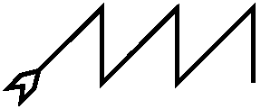
July 12, 1995 3:45 PM
The vision opened with a brief image of torrential rain, gone almost before it was seen. Then it seemed as if I were in a region of deep, still, clear water, but colored purple or mauve of the shade sometimes seen in the body's internal organs. [7/13/95 -- The color of the inside of the womb during a woman's fertile days of the month, when it is engorged with blood.]
Within this water -- if water it is -- there floated many small pearl-like spheres, distributed thinly throughout the volume I could see.
The voice said: "Each of these 'pearls' is a world; no, not a single planet necessarily, but a region wherein a single creative theme is being manifested. It might, in time and space, be a planet, or a sun, or a person or some other thing. But here within the womb of the Mother, in the amnion of her body, are these creations the simple things you see. They are precipitated out of her undivided fluid by the stimulus of the Father's seed; each seed is at the core of one of the pearls you see, and she builds upon it those things necessary for it to become manifest."
Another brief image here. I moved toward one of the pearls and passed into it. Passing the boundary, an unending variety of things exploded outwards around me. Everything was in a tremendous state of activity, things changing into other things, new things constantly arising, old things disappearing and re-appearing in a modified form. I couldn't grasp but a small portion of what was going on. Then I was as suddenly back where I began, and all that activity was shut off as if it had never been. All this took place within a second, but seemed longer in terms of experience.
"That which is inside them, which is their nature, is of no importance here. For she transcends all such creations in herself. She is not affected by them, nor is she in any way active within them. (Though she is present therein at all times, yet she does not act or move.) [That is, the particular theme being expressed inside a "pearl" is a wholly internal matter, and is irrelevant to the realm which contains it. Anything that expresses a specific nature is not Her.]
"They see her not, who are within such a pearl; they know her not, nor can they come to her without abandoning that which they are. For she is free of all conditions, all distinctions, all differentiations and limits; she is the 'none' that encloses their "sum". [I heard "sum" as a three-way cabalistic pun, meaning "sum" in the sense of "totality", "some" in the sense of quantified thing-ness, and the Latin "sum" or "I am".]
"She is Nought, yet All cannot contain her; the smallest portion of her would overflow it. (And this word 'portion' is a lie even to speak in her presence.)
"Go you to her, o man, and become her servant. She it is that is your true core of being, the unchanging, end- and beginning-less [a word not comprehended here] of you. Not Set, for he is her Servant as you are, and made you out of her at her direction. Not any god is at the core of your being; there is no core, only endlessness."
(I don't know whether this statement is specific to myself, or a general statement of man's condition. The unspoken subtext seems to say the former; The god Set is my "father", but in some circular fashion his creation was the will of the Mother, according to terms she somehow specified. How an undifferentiated, non-acting whatever-she-is could do this is beyond my understanding.)
"We are done for the moment. Come again to this place before going on."
Friday, July 14, 1995 1:33 PM
Once again I get a brief glimpse of torrential rains, then the image changes to a mountainous seacoast, possibly a peninsula jutting out into the sea -- I cannot tell from my viewpoint, which is out over the sea. (near Sorrento, south of Naples?) Three sharp-peaked mountains are the peaks of the Part's sigil.
Now my viewpoint sinks into the sea, first through brightly-lit water full of colorful fishes, then through darker, blue-violet water. Finally into a region where the water is dark, not with the absence of light, but because its color is ultraviolet, beyond my sight.
Strange shapes form and dissolve, hardly seen in the moments they exist. One seems to be a wire-like outline of a cube, but with a hole in the middle. (That is, a spherical region of absence is suspended in the center of the cubical frame.)
Another looks like a dog with three heads, each one pointed to a different point of an equilateral triangle. Or is it a trefoil brass candle-holder? I cannot tell.
A Russian icon of Jesus, complete with gold-leaf halo, comes and goes again. His left hand is held down and palm-forward, with the thumb and first two fingers spread and the other two fingers folded against the palm. The right shows the same gesture, but with the hand raised to breast-height and the fingers pointing upwards. The icon tilts backwards until only its edge is visible, and then floats upwards out of sight. I do not know what this means.
The voice says: "That which is the source of creation is also a source of destruction. For are not the waters below as they are above? [That is, the Mother surrounds all creations, so she is as much "below" them as she is "above" them in their internal coordinate system, even though that system is meaningless in her own context.]
"She is the power that burns in the depths of being, that churns up the detritus of ancient days and brings it forth into the light. She is the acid that eats at the roots of being, and hell is in her as much as is heaven. If one sinks into those depths, then one encounters her in a seemingly evil aspect, as she destroys him. She is the ending-place of the Black Brothers as she is of the White, though they know it not and would deny it if they could.
"We say these things not to scare, but simply as fact. She is there; her being surrounds all. In either direction one comes to her, at the ends of creation."
I felt myself continuing to sink into the water, and the forms ceased to appear. Momentarily there was a sense of many disconnected particles flashing about. Then it felt as if I had passed through some sort of membrane and had fallen out of some enclosed region into a larger one. The flashing particles became stars filling the sky below me, while above was a great sphere of a dark purplish-silver color. And now I wasn't falling "down", but "away" from that sphere.
And as I moved away, I saw that what I thought were stars were actually galaxies. I could sense all the individual stars that composed each one, and all the living planets that circled those stars. And on one of those planets was the mountainous peninsula I saw at the start of the vision.
"The end is the beginning. There is, in truth, no beginning or end within a creation; it circles back on itself to be fully enclosing in all dimensions. The smallest becomes the largest, and the largest circles back to become, in time, the smallest. And outside all dimensions She supports them, and feeds them."
Now I am back in the mauve sea of the first vision, with the pearls floating around me. And every one of them contains all that I have seen here, the entire circle of creation from largest to smallest. I feel myself dissolving into that sea.
(Here the seer abandoned the vision and went to meditate. He found himself dissolving and re-forming many times over the next half-hour, at which time he reformulated himself by his will and went about his daily business.)
Seer's comments:
Here again we have a presentation related to the Mother aspect of divinity, without any reference to a particular path of the Tree of Life. Perhaps this and the previous two visions serve as a general introduction in a way roughly analogous to that in which the three Parts of LIL served for the Parts as a whole and for the Father aspect. Note the contrast between the theme of division and conflict there and the theme of non-division and continuity here.
The deep, still water of the opening image reflects the Piscean attribute of the Zodiacal King. Possibly the rain does as well, as a representation of the biblical Flood. The mauve coloration of the water may be a blind for the invisible "ultraviolet" that is the King Scale color of the sign.
The presentation of the Mother as "undivided", etc. is typical of Binah, but I believe that a higher state is meant here, with Binah being its reflection, or that portion of it that can be experienced within the limits of the terrestrial Tree of Life. In standard cabalistic terms the Mother of Binah is co-equal with or slightly inferior to the Father in Chokmah, where here it is stated to be definitely superior in some sense.
However, the next three paragraphs definitely relate to Binah; whether they also relate to that higher level I cannot know. The movement into and back out of the pearl connects to one Binah experience in which the finite levels are perceived as being "sealed off" in some way from the transcendental levels, with the internal finite events being irrelevant or meaningless within the larger context.
In Friday's vision the Piscean element is stronger. The sea becomes the true Piscean King Scale color. The forms all relate in some way to Pisces experiences: the cube and hole are the perception of the emptiness of a purely finite existence; Cerberus is Hell or suffering; the candle-holder is devotion to God, overcoming suffering; and Christ is the final salvation. The whole series is a summary of the religious (as distinct from the magickal) interpretation of the universal formula of INRI.
The vision then returns to the idea
of the Mother as the Universal Container. The words speak of the
Black and White Brothers, but the unspoken subtext had a slightly
different import. Whether one moves towards the seeming unity
of the Father, or towards the chaos at the roots of being, one
eventually encounters her and must dissolve oneself in her to
attain her level. In fact, with the principle that there are many
Fathers, as spoken earlier, the difference between the endpoints
disappears. If there are a multitude of creative realms on the
cosmic level then the conditions there must be similar in gross
outline to conditions on the sub-atomic level. Thus in the final
image one turns into the other.
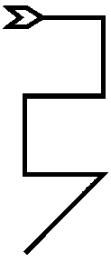
Zamfres, Part 22 of 91, 1st of ZID. Zodiacal King: Gebabal. Ministers: 4362. Mundane association: Mantiana (a mountainous region along the western border of current-day Iran, where it meets Turkey and Iraq. East of Lake Van, west of Lake Urmia.)
Invoked Zamfres according to the usual custom. Vibrating the name Gebabal produced an unusually strong response.
As the vision opened I was looking at the mundane region (of Zamfres) from above. For a moment the two lakes to either side became the eyes of some god looking back at me; the twin rows of mountains running north-south between them became the bridge of his nose. The spreading Tigris-Euphrates flood plain to the south became the fleshy part of his nose. Then the eyes closed, and a pressure I was not aware of eased, as if some great being had judged me and found me too inconsequential to deal with.
The glyph of Cancer formed about the lakes, each at the center of one of the glyph's circles. The two curved arms above and below encircled and enclosed the region ruled by Zamfres.
The voice said: "Ea rules the great subterranean sea, and his eyes upon the world are those lakes that you see. Therein, it is said, he concentrates the salts that would otherwise dispel the purity of his realm; for the underground sea is fresh, not salt water, and the springs of the Earth do come forth from it.
"Now in the spring of one year did the waters below burst forth; not in refreshing fountains but in great gouts of water that did destroy all about. And the rains came as well, out of season, and with the tears of Ea, that flow from his eyelids, did inundate the lands of men.
"Fifteen cubits did the waters rise, and the cities and fields of men were awash. Covered over were the cities of men, for they did dwell beside the rivers. Covered over were the fields of men, not with the life-renewing floods of normal times, but with the destroying waters. And the great Temples and groves of the Mother were all destroyed.
"It is said that Enlil caused this destruction, because the noise of men kept him from sleeping. And this is not so, for the noise did bother him not because of loss of sleep, but because that noise was raised in worship of the Mother, holy Inanna, and little of it was raised in his own praise. Thus did jealousy, hid secretly in the heart, cause the destruction of the world by water.
"And in this time was one man saved, along with his people. Ea whispered in his ear, the ear of Ziusudra, and did cause him to raise up a ship fit to withstand the flood. And this ship was itself an act of worship -- did it not have seven decks, and were not they divided each into nine compartments? Thus it was a Temple of the World, to hold all the world within it.
"And into the boat did Ziusudra take all that was needful for the restarting of the world. Of people and animals and goods did he take all that was needful, and all his wealth as well. And in the time of the flood, when the rains came with great destruction, and the waters rose up to destroy men's abodes, and the great wind out of the south blew, then did Ziusudra enter his boat, and come to be saved. And all his people with him.
"The great south wind, raised by the god, did blow the ship northwards, unto the brow of Ea. And there, when the waters receded, did it come to rest. And when the birds did show that the Earth was safe to trod upon again, then did Ziusudra come forth with all his people and make great sacrifices to the gods. And the gods were needful of this, and partook of the sacrifice with great hunger. As it is written: 'The gods hovered about the sacrifice like flies about the offering.'
"And the gods did rebuke the Destroyer for seeking to bring about the end of Man. For without man, who would feed the gods? Who would supply them with offerings of meat, and grain, and beer? And who would, in their own time, replace them? And so the gods placed a protection upon mankind, that they not again be destroyed.
"And Ziusudra and his wife, they made into gods; granting them the immortality of the gods, and giving them to dwell ever after in paradise, beyond the mouths of the waters."
"And so goes the tale of the flood, o man. And you have wondered over it, seeking its significance. But what other significance could it have but that great process hidden in INRI? [A thought of annoyance from me evokes an amused tone from the Voice.] You cannot escape it, o man, it is everywhere. Consider:
It is Inanna, the earth-mother, of whom Enlil is jealous. Enlil himself brings destruction, and so is Scorpio-water. Ea who is Shamash preserves him, and forces Enlil to give him a "soul even like unto that of the gods." Earth, Death-Water, Sun, and Air or Spirit -- thus again does INRI intrude into the affairs of men.
"Now there is more to be seen here, now that this is out of the way. This is indeed the power of Zamfres manifesting, and in another time we will show you a different view.
"Come again, and see. We are done."
Seer's comments:
I had been invoking Zamfres informally for a couple of days before this vision. About all I got out of these invocations was a mild obsession with the Flood story. But it didn't seem quite to connect. I suspect that this recitation of the Babylonian Flood story is to get this (possibly superficial) interpretation of the Part's power out of the way, so that something more direct and meaningful can come through.
The vision of the previous Part mentioned the "waters below"; Ea is a personification of them. Since the entire world (from the Babylonian viewpoint) is part of this Face of Ea, this is a repetition of the idea previously put forth that water surrounds the universe.
The "tears of Ea" are the meltwaters that normally caused the Tigris and Euphrates to rise and renew the soil of Mesopotamia in spring. These come from the mountains surrounding the two lakes Van and Urmia, and thus metaphorically leak from the eyelids of the god.
One can imagine the Babylonian version of the Flood having some basis in reality. The topography of the region is such that it wouldn't take a great deal of extra water to flood most of the inhabited areas of Mesopotamia. In the days before flood-control, the Mississippi and Missouri rivers regularly flooded much larger areas. Unusually heavy rains could easily produce such an effect without any miraculous intervention. Since Enlil is the god of storms, he would naturally be blamed for it by the survivors.
Ziusudra's boat is said to be a Temple of the World. He was instructed to build it as a cube 120 cubits in every dimension; thus its three dimensions sum to 360, the numerical symbol of the circle (which originated with the Babylonians). Within the circle of the universe, it has seven levels for the seven planets. Each level has nine compartments, which I speculate corresponds not to the usual lunar symbolism, but to the nine fruits on the Tree of the World -- roughly equivalent to the sephiroth. So it encompasses both the heavens and the Earth within its design.
The interpretation of the story in terms of the INRI formula distorts the attributes of the gods somewhat. In Babylonian terms Ea is a god of Water and Enlil is an Earth-god. With Anu they make up the prime triumvirate of the pantheon. They correspond to the Greek triumvirate of Poseidon, Pluto, and Zeus, who divided up the world between them.
But the association is probably valid anyway. The Earthy aspect of the story is the prediluvian world of Mesopotamia -- fertile, wealthy, and happy. The Scorpio aspect is the Flood itself. Ziusudra survives by creating a microcosm -- metaphorically discovering his solar self. And the granting of a god-like spirit raises him into the Airy realm of the final "I" of INRI.
Incidentally, the Part's mundane region, Mantiana, was at one time the Kingdom of Ararat, the same "mountains of Ararat" where Noah's Ark landed after the biblical version of the story.
Wednesday, July 19, 1995
After yesterday's work, I had an increasingly strong conviction that I hadn't really penetrated into the core of the part. The vision of the Flood seemed at least somewhat appropriate, given the zodiac association of the ruling King; but I felt that it had been thrown off by the Part as a diversion, or in the way that some lizards will sacrifice their tails in order to escape being eaten.
Late last night (this morning rather, around 12:30 am) I invoked the Part again with the intent to examine its energies and see if I could get a clearer perception of what was going on. I did not record the work at the time, in order that I could give all of my attention to the task.
The first invocation produced a sense of energy basically similar to what I got during the vision. But there was also a sense of something behind it that was of a different, deeper character. Repeating the invocations, I began to perceive the superficial energies as a shell surrounding this core; it seemed to produce a centripetal effect in anything that touched it. That is, it imparted a sideways vector, the way a spinning object will knock away anything that hits it at some odd angle.
I did additional invocations, calling repeatedly upon the God of Hosts and the Enochian God by his twelve names, in addition to the usual names associated with the Part. This seemed to increase the power of that central core, but did nothing towards enabling me to enter it.
At some point, I decided a diversion of my own was in order. If the defenses of this place were set against my usual astral body, then perhaps using a different one would enable me to pass them. For many years I have worked at developing a second astral body in female form; it is a construct intended to provide a sensory base in which I could explore the "feminine" mode of my own personality. It was never intended to be used for magickal work, but I tried to use it so now. Leaving my regular magickal body in place, I transferred my awareness to this other body, and moved it around to one side of the region I was trying to enter. Then I tried to slip in while the defenses were still focused elsewhere.
It seemed to work, to some extent. I felt that I was "inside" the region and was feeling its power around me instead of from outside. Almost as soon as I entered, some slight modifications occurred to the body. An Egyptian "Crown of the North" -- shaped somewhat like a red shmoo -- appeared on my head, with the plumes of Maat mounted to either side of it. The facial features took on a nilotic cast, and the eyes turned from green to brown. The hair remained black. (I was seeing this reflected on the inside of the aura around the body.) A dress formed around me, reminiscent of the styles in ancient Egyptian stele.
I moved further in, and more changes took place. The crown disappeared, to be replaced by a built-up hair style (I forget what women call it -- beehive?) with the hair threaded around with thin golden ropes. My hair became very wavy where before it was straight. The dress changed into the "Cretan" style -- breasts exposed but pushed up by a tight corset-like jacket, long skirt. Bracelets in the form of serpents appeared on my wrists. I felt several inches taller as well.
In both of these forms, I felt very like a priestess. But it was as if I was remembering and taking on an old form rather than manufacturing the feelings from my imagination.
Now I was simultaneously in this body, and viewing it and its surroundings from above and behind her. I made some sorts of gestures -- the nature of which I don't recall now -- and called upon the Gods and the names of the Part again. A brilliant aura formed about me, and it seemed that stars played about on its surface.
There appeared before me a large group of beings; I could not tell if their forms were male or female. The each wore clothes like those of a dervish-dancer, save that a small cap with cylindrical sides about two inches high was added. And instead of the dervish's white, these were covered in intricate geometric patterns, in which red and yellow predominated.
These beings began to dance, a dance composed mostly of spinning motions but with an occasional leap or lifted leg. Their skirts flared out as they spun, revealing bare feet. Their spinning motion carried them each sideways, moving in arcs punctuated sometimes by small loops. Their was no regular pattern to their movements; the motion carried them randomly around the visible area, and sometimes out of it. I took these beings to be the ministers of the Part, and their motions to be in some way dictated by the Part's energies. I watched, trying to feel the power behind them.
After ten minutes of this, I began to feel myself drifting from a meditative state towards sleep, so I ended the work and returned to my physical body. Waiting to fall asleep, I still felt my female astral body distinctly, though it remained more or less congruent with my physical body. An aura remained around me, in which a horde of tiny, shimmering pentagrams flashed about. Eventually this subsided, and I slept.
Writing this all down, I seem to have re-invoked something of last night's power. I can hear the Voice of the Part saying:
"Hail unto She who is the night-sky; she has come to us! She whose eyes and hair are the darkness of night; whose crown is made of stars; whose necklace is of lapis set in silver. She who encompasses all within herself; from whose womb all things come, and from whose breasts comes the milk of her heart to feed them. This is she whose power is one with all gods; whose womb opens to them that they might create children to fill all lands and times. Whom the Serpent serves in all things; acknowledge Her, o Serpent, and be one with her!"
I feel that this last is directed at me, and raise my awareness in a focus of greeting and contact.
"Now comes the Serpent, her servant in all things, who has carried her will in the world since the time of man was not yet born. He is the Snake whose burrowing undermines all realities, dispersing their solidity [or, possibly "breaking their forms"] so that her power shall shine in the depths as it does in the heights of the night-sky. Think ye, o man, that your work is in vain? Think not so; it shall be fulfilled. That which comes as a sun in the sky is not all of the spirit; that which penetrates unknown is often more effective, and shall have longer effect. [I don't know what inspired these last comments.]
"O Serpent, come you now or later, and you shall see what is here. Come in your female form, girt about with your ensigns of office, and we shall let you enter here and know for all to see."
I feel that I need a little more practice before trying to use my female body in my normal visionary mode; it is too difficult to split my focus between seeing and recording. So I indicate that I will do so at another time.
"Then we are done for now. Farewell."
Friday, July 21, 1995 10:46 AM
Invoked Zamfres with the usual method. I formulated my magickal body in a female form, dressed as a priestess of Inanna.
The sigil of the Part rose up out of the circle and hung before me in the air. A second copy of it split from the first, flipped over on its vertical axis and moved to one side. Now a long staff like a shepherd's staff came up from below and stopped between them; it was a plain wooden staff with a small knob on the top end.
The two sigils became serpents, and moved inwards to wrap themselves around the staff. Their tails touched the staff, their heads faced outwards to either side.
The voice said: "The Serpent is Her symbol of Life, for serpents were at one time thought to be generated spontaneously out of Her substance; the livingness of the world became too full, and concentrated and manifested itself in these sinuous forms.
"Later on it became known that the powers of life in the body flow also in these forms around the staff of the spine. And so this symbol before you was formed as the embodiment of Her power. This has been Her symbol since time immemorial, in many places; only in more recent times did some steal it for the symbol of a male god.
"Take the staff, for it is yoursas Her servant in all things."
I reached out and grasped the staff and felt a rush of kundalini-like power through my body. I only held it for a moment and then it merged with me; the knob of the staff in the center of my head, the heads of the serpents coincident with my eyes.
And now before me I again saw the image of Mesopotamia and the regions north of it. It seemed that the Tigris and Euphrates delineated the sides of some mystical staff overlaid upon the land; they were actually the Serpents entwined about it. The two salt lakes became the heads of the Serpents, and the mountains to the north between them became the knob of the staff.
"All this land is Hers, o priestess; it always has been and always will be. Though the man-gods rule, yet their activities are those of children playing in a house their mother made, not understanding how she maintains it even as they make use of it unthinking.
"It is here in her Womb that she brought forth her gifts to mankind; writing, agriculture, crafts and cities; history, the memory that lasts beyond the lives of a generation; the cooperation of great numbers to ease the labor of all. In this place were they born, and here will her other gifts return to mankind in other days.
"What boots it if for a time the children play, while Her attention is elsewhere? She made these things for them, and if they now think they are Lords of Creation, in time they will remember and come back to her. The motions of time [i.e., the last few thousand years of history] are a short holiday afternoon to her, as well you know.
"When they hunger with the true hunger of the divine, then will She answer them; when they tire of snacking on Seed, and desire the nourishing Milk, she will feed them until they are full up. In the meantime, she lets them go; how else do children grow, but through play and experiment?"
A playful atmosphere comes to the vision. At the same time I feel the clitoris of this body hardening and sticking up out of its fold. A flashed image comes of a woman's sex in a state of arousal.
"And this that you see is the true origin of the Serpent's symbolism. She sticks her head out of the furrow when the flows of life are at their greatest. Of such small things are great truths formed. [A sense of giggling, teasing amusement here.] Only a man, divorced from the land, could think that his ponderous club sticking up in the air is the embodiment of the snake's power. No; the snake stays hidden in the folds of the Earth, close to its burrow, and only comes out into the light of day when the rains fill up the Earth and the spring overflows." [The correspondences of this metaphor should be obvious.]
At this point both the vision and the voice dissolved into a rich turquoise illumination. For twenty minutes or so I assumed the throne asana (with both physical and astral bodies) and simply experienced it.
The voice returned:
"Now, what would we say to a woman who comes here? You shall not know. For even though you come in the image of your past selves, yet in this present time is your finite being shaped to other purposes, as you know. No matter the accuracy of your reproduction [of your past self] it lacks the foundation in daily life to truly comprehend the basis of womanhood; and memory [of past lives] fails when the nerves and body are not suitable.
"And even a woman of your times would have trouble finding the essence in this place; for the thoughts of the world [i.e. public and social expectations] are a pressure upon all, shaping and distorting even where the individual is suited to see what we have here.
"Yet we would say to her: Come here, and experience the freedom of the goddess. Know the exaltation of womanhood as it was in times before the dominance of men. Know what it is to love who you chose, when you chose, without obligation, without being owned or limited even by the pressures of society. Know what it is to chose the fathers of your children as you will, with full awareness that the children will be yours, and yours alone, with neither obligations to or duties expected from those men. Know the great freedom, as it once was and as it will be again in future times.
"Beyond this, we will not speak at this time [on this subject].
"Now, o servant of the goddess, prophet of the snake: Remember as you can these past times, and incorporate them into yourself. You will see, in time, where all this is leading; even Understanding is insufficient when the times are not yet right for revelation. It may be they will never be right, while this body of yours yet lives. The future is not, despite the claims of some; there is no inevitable destiny to events, requiring that they come will-ye or nil-ye. All is change, all is flux, until the moment of manifestation comes.
"You have known that some of your duties in this life are contingent upon events; if those events never come, then other things will be found [for you to do]. It matters not; great destiny or small, it is all the same. Do as your nature and the circumstances dictate, and let what shall come do so in its own manner. Seek not to form events; the responsibility for this lies elsewhere. Dance the dance, and enjoy.
"You are many things, too many to describe or enumerate. You are fully a human being, yet you are also like unto the servants and ministers of God. You are the lost past and the distant future. You carry a god within you, and are one with that god, and yet you are not [one]. Everything that one might say about you is contradicted in some particular. All categories fail in describing you. Therefore explain not, describe not, and ignore descriptions; simply be, and act.
[Something here about future visions in this series, which I did not catch.]
"We are done."
Seer's comments:
As near as I can gather, this Part defines the relationship between woman as a finite being and the Mother as transcendental Being shown in the two previous parts. Even the portion I was able to experience (during the meditative hiatus) was astounding. There was a great deal I intuitively apprehended about the attitudes necessary to perfect such a link; but I find them impossible to describe. All the English terms that bear on the matter are pejorative in one way or another; the language lacks any means of speaking of it in a positive manner.
It is easy enough to read over this vision and the previous two Parts and extract the essentials. What is not so easy is to imagine a social context in which these things are the height of respectability; in which the woman who achieves them has not only her personal will to sustain her, but religious cachet and a supportive social structure to help her maintain the state. I doubt it would be possible to fully realize all aspects of the relationship in any "civilized" social context that exists today; they have all been too poisoned by Aryan attitudes.
Other than this, there is little to say. The sections dealing with the Serpent symbolism are self-explanatory.
Overall, the three days work on this Part all relate in a general way to the zodiac sign of Cancer. Cancer is primal Water, hence the Flood symbolism. Cancer is the sign of Motherhood, so the rest fits in well enough. The erratic dancing of the ministers might be associate with Cancer as the Crab, which moves in skittering, sideways jerks.
There is also some small indication
that we are moving out of a general presentation on the divine
Mother and back into presentations more closely related to the
paths of the Tree of Life. The image of the Mother as star-goddess
relates to the path of Aquarius, which connects Binah with Chokmah
in Frater Achad's Tree of Life. No doubt this connection will
be explained more closely in other Parts.
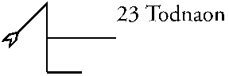
Todnaon, Part 23 of 91, 2nd of ZID. Zodiacal King: Olpaged (Leo) Ministers: 7236. Mundane association: Soxia (Sinkiang or Xin Jiang province in western China.)
(Note to myself: The sigil for this Part doesn't match Dee's version. Check it before doing. [7/23/95 -- Dee's version is more compact. My version takes the letters in their proper sequence, but adds a superfluous line, making seven line segments instead of the usual six. There seems to be some rule that you can't jump the line except to an adjacent square.])
Sunday, July 23, 1995 11:27 AM
The vision began with an image of a featureless circular area of a brownish-yellow color, surrounded by a necklace made of tiny rosette-like forms mounted on a thin chain. The rosettes each appeared to have a blue center, with white petals in a single circle around the center. Each petal was trapezoidal, the long parallel side as the outer edge. They seemed to be made of some enamel or ceramic.
Now the image shifted slightly and the central portion became a barren sandy waste, the rosettes became oases around its edge, and the chain became trade roads between them.
The image shifted again, and now there was a great lion, roaring and leaping about with frantic energy. His fur stuck out from his body in every direction, every hair vibrating, but moving in a different way from all the others. Flames came from his mouth, but did not harm anything -- there was nothing but sand there. There was no purpose to his movements, no object or intent. I felt a sense of pity for him, wasting his energy in violent, empty motion.
Now a woman appeared, dressed in a thin white robe. She was golden-haired and had brown skin. She placed her hand upon the lion as he came past in his leaping, and he immediately stopped; but still he quivered with power looking for an exit. The woman stroked the lion for a time. Then she lay down on his back, resting her head on his neck, with her body and legs along his spine.
Her aura had radiated a sense of soothing calmness. Now it took on a very odd quality, sinuous and serpent-like. Gravity seemed to have no effect upon her; she was attached to the lion by some inner force of hers which negated anything else that might affect her. She began to glide around the lion's body, keeping full contact with it at all times. Like a snake wrapped around a tree she circled and looped around him, down and under, up and over, in every direction. "Glide" is the precise word; she encountered no friction at all as she moved. Very sensual.
A change came over the lion from her actions. His energies before were not only without direction, they vibrated in every possible manner simultaneously, and changed and shifted chaotically. But the woman's actions seemed to bring order to them, sorting them out by type and nature, and brought focus to them as well. His fur settled and smoothed, his mane combed itself into neatness.
It seemed that the woman coupled with the lion for a moment, and took a measure of his power into herself. As she did her aura expanded to totally surround the lion, enclosing him as her womb enclosed his member. A sense of great pleasure filled the air; entirely sexual but in no way tense.
Now the woman glided around again to the lion's back, and sat astride him. He looked about for a moment, and then began to move purposefully away from this place. It was his own purpose he followed; the woman rode him, but did not direct his course.
The voice spoke:
"It was said that Babalon was a harlot, but this is not so, save in the minds of the perverted who can imagine no other view. She is qadish, the pure and holy one, and it is her holiness that allows her to take all men into herself. By doing so she affirms herself, transcending all natures by enclosing them. If one man is wicked, it matters not to her; if another is good, she takes him as joyfully. Each benefits thereby, and her sanctity is increased by her actions.
"Yet if man is so caught up in his own "superiority", if he thinks he must degrade her to raise himself up, if he refuses her divinity in her acts of love; then he loses her and must go alone in the world, unsanctified, wasting himself in empty works. For it is she who gives focus and order to his work; in his union with her is his true will revealed. She does not guide; his own nature guides him. Yet without her does his nature go astray.
"Give praise to the holy one, mother and lover, the source of comfort. Her love surpasses understanding, yea, surpasses even the crown. In the secret places of the unmanifest, she is All, and None; there is nothing she does not encompass within herself, yet she is greater than all of them together. Meet her joyfully, o man, and embrace her as your lover.
At this point I fell into a meditative trance on the energies of the Part. No further vision came.
Monday, July 24, 1995 12:57 PM
The vision opened with another view of the necklace seen yesterday. But now the yellow-brown area in the center was a large high-cabochon cut topaz; the center of each rosette was an ice-blue diamond, and the petals were feathers, in which all colors coruscated beneath their overall whiteness. The whole was a huge brooch or medallion, mounted on a ribbon colored like a lapis stone; the ribbon was the Milky Way. It was worn around the neck of some great being who could only be sensed vaguely, not seen.
I seem to be having some trouble; nothing more wants to come. Odd, since when I was sitting on my bed invoking the Part, all sorts of visions rushed about me. Now sitting in front of my computer, there is nothing.
While doing the invocation I had two important realizations, received mostly in a visual/intuitive form. Translated into words:
First, concerning the nature of the Enochian system. I have said many times that this magick connects with absolutely everything that exists, on Earth or off it. It touches every part of the universe regardless of whether it is part of our Earthly scheme of creation. My work with the "Lotus of the Temple" shows that it connects to some very strange places indeed.
As has been stated several times in these visions every "male" seed, every act of creation by some entity, creates a region -- a "zone of power" -- with a definite thematic and energetic content. That is, it is limited in the sense that anything with a definite nature excludes from itself things not of that nature. Since the Enochian magick connects together a multitude of different creative zones, it follows that it cannot be a "creation" in the same sense that those zones are; otherwise some regions must necessarily be excluded from connection by its incompatible nature. The Enochian magick must instead be a manifestation of the "female" aspect of divinity, as it has been described in this and the preceding Parts; the Enochian God may very well be an Enochian Goddess.
This would account for the way the magick always seems to enter a particular region along some dimension that doesn't exist inside the region; and for the peculiar "twist" it sometimes puts on our view of a region. The connections exist in the transcendent aspect of the divine Woman, so would appear to be irrational or indescribable within any particular finite frame of reference. It would also account for the way that the "regular" angels and gods of the Tablets often show deeper natures totally different from their superficial, "elemental" classifications.
The second realization concerns the Call of the Aethyrs. The recent Parts describe the universe as a single transcendental Female aspect, within which a multitude of creative "fathers" work their will. These creations do not exist in isolation; they interact with each other. Being of many different (and complex) natures, they must necessarily come into conflict as often as they are compatible or irrelevant to each other. Within the enfolding Mother's influence, they sometimes compete, sometimes cooperate, and are sometimes irrelevant to each other. In short, they form a complex dynamic system -- an "ecology", if you will -- in which everything affects everything else, but in ways that do not have predictable outcomes.
If we accept this view, then the "curse" of the Call becomes nothing of the kind; it is simply a poetic description of the actual way of things. I will not analyze the Call in detail until I think about this further.
There was also an appearance by the lion, but it only repeated things from the first vision, from its own viewpoint. Nothing significant in its speech.
Wednesday, July 26, 1995 12:45 PM
The vision opened looking into the topaz at the center of the brooch seen previously. The Lion appeared therein, and suddenly I was the Lion, looking outwards. The lion's mane rose from his head and formed a cloud around it, as if held out by static electricity. As suddenly, all of the lion except the mane collapsed into a tiny point and disappeared; there was nothing left but these charged lines radiating out in every direction, a sphere with no point at its center. My awareness went into these lines. I noted that each of them was a different color and seemed to carry a different type or frequency of energy. Individual lines changed their position in the sphere constantly, so that there was no steadiness or continuity.
Now I saw the glyph of the Sun before me. Sparks of lightning leapt from the central point to the peripheral circle all around its circumference. A hand came in from outside the picture, and cut the circle; the circle disappeared and all the energy of the point went into the lightning leaping outwards; the point also disappeared. The lines of lightning spread out and vanished from the picture, each taking an erratic, spinning path.
The voice said:
"The Father is the Son shorn of his enclosure, which is the contribution of the Mother. The nature of the Father is to project itself outwards in all directions; it loses itself in the motion, and is no more. Without the enclosing love of the Mother, the Father expends his power to no purpose; it neither creates nor exalts its creator.
"She reflects his power back upon itself, enclosing it and forcing it into a narrow passage. It is thereby constricted, but its remains intact and undispersed.
"She also provides a focusing effect. Without her enclosure, the power radiated in every direction, each individual type moving by itself . Now, with her circle about Him, the energy is folded over on itself; that is, powers that are harmonic with each other, which belong to the same "chord" of vibration, are gathered together and focused on a particular point on the rim of the enclosed region. Remember the original image of this part:"
I saw again the first image of the Part, a chain of rosettes around a hot barren area. The rosettes now each seemed to vibrate with a different quality, shining outwards into the surrounding world and also back towards the center of the ring.
"The many qualities inherent in the Father's original impulse cannot be re-unified. They cannot be brought back together in the center of the circle and fused into a single point. Different groups of those energies are inherently incompatible with each other; once separated, they never rejoin.
"The real powers of the Son lie in these nodes upon the perimeter of his region; there is no true center, no individual, no point-like interior "I" to be found. But the nodes interact with each other, exchanging energy, cooperating and interfering with each other in many ways. And this intense interaction generates the illusion [word emphasized] of an individual, whose nature is determined by the pattern of those interactions.
"This is the meaning of the Buddha's dictum, that there is no permanence within the skandha of consciousness. For consciousness (and especially self-consciousness) arises out of the interaction of these nodes of power, which are not themselves conscious. And consciousness is entirely dependent upon their interaction; its specific state at any point in time is determined by the momentary state of those interactions in their ongoing, perpetual changes.
"If they change, so it changes. And yet...[brief pause] it seems at times as if this meta-creature, this abstract gloss upon the reality, itself is able to generate a will-to-change within the nodes from which it arises. Does this mean that it actually does have some existence separate from its supports? No; for what appears to be self-will arises not out of the illusory Self, but in a higher realm all together. It is a third factor, beyond the Father and Mother as they exist in the Tree, which enters into the equation. All will is really the divine Will, expressing itself through the medium of a Son.
"This divine Will is of great importance; for it is the source of the urge to evolve, to move upwards in the planes of existence, which is the process of initiation. It is the Will which makes such changes possible at all; without it there would be only gradual, almost accidental movements in that direction, quickly lost again. It comes from outside [emphasized] to work changes within the finite being. Why does it do so? We know not. How does it do so? By its own nature. When does it do so? According to its own judgment (if judgment it truly has), and not according to the desires of the being in whom it acts. Once it comes, it is always present to some degree, but that degree varies greatly in intensity, and therefore in what can be accomplished.
"But when the will appears in the man, it does not dictate the nature of change, but only enables it. It is the task of the Son to seize the time and move upwards according to its current state, its preparation for the moment, and its desires of achievement.
"Now in the previous Parts, it was shown how the woman might become the Mother, through direct identification of their natures, by creating a congruence between the acts and perceptions of the finite woman and the transcendental nature of the Mother. One might interpret this as being mainly a religious mode of work, but it is not so; it is a truly magickal mode of work, and only the blindness of men makes it seem otherwise to them.
"Here in this Part we have the key to how a man might come to know the Mother. This way is the traditional way; we give here a slightly different viewpoint on the matter.
"The "circle" which the Mother gives to the Son, the enclosing and defining perimeter, is not Herself as such, but only a reflection. It is a ring-pass-not in the Theosophical sense, a boundary which contains his energies and focuses them. It is a limitation or wall in a way that she herself is not, and is itself finite, not transfinite as she is.
"But the Mother herself (in her manifestation as Binah) can perform the enclosure of the Son's energies as well as can that lesser circle. She already does so, in fact, but the lesser circle blinds us to her presence.
"When the nodes of a finite being have organized themselves and their interactions to the greatest extent possible, and have eliminated any stray vibrations from external sources, and have reached the highest possible "charge" of power within the limits of the lesser circle; and the Will is present in full force. Then it is possible for the man to break down the lesser circle, to cut it away as did the hand in the image we showed you, and release its energies outwards.
"Since the existence of the individualized "self" is dependent upon that circle, and upon the nodes of power it creates from the Father's energies, then the destruction of that circle causes the destruction of that self. The energies of the nodes are released and expand outward as is their nature when unconstrained, their interactions stop for a time, and the illusion of Self ceases.
"But their movement is not entirely unconstrained, for without the lesser circle, the Mother can come into direct interaction with them. If each node is endowed beforehand with enough energy, then when it is released the Mother's nature takes it and encloses it in her being as it would an impulse directly from the Father. It becomes concentrated again, but as water flows into a hollow, not as fire is concentrated in a spark.
"We are not saying this well; it is a difficult thing. Perhaps an image would assist:"
I saw a glyph of the sun, with tiny points of power situated at various points around its circumference. These points were very intense, like the sparks of an arc-welder. Sharp lines of light shot between them, defining their interactions.
Then the circle was cut and the sparks were released. Each moved outward radially, expanding from intense points to less intense spheres of power as they went. The view expanded to keep them all in sight, and as it did so I realized that they were expanding into a great sea, a region of a watery nature, whose nature had been previously concealed by the narrowness of the view.
As the spheres of power moved out in this region, their nature changed. They seemed to take on a liquid quality themselves. Their power was not reduced, but the urge-to-expand (or urge-to-expend themselves) disappeared and was replaced with a kind of "contentment" with their current state, a sense of being in some way at rest. The outward motion ceased and they were all left floating in the sea.
Indeed, aside from the obvious visual distinction, I could not perceive any difference between these spheres of power and the surrounding water; they seemed identical in every other way. Now new visible flows began to connect them, and these two were not in any appreciable way different from the water in which they were.
The voice spoke again:
"You see, when the powers are released and expand into the larger realm of the mother, they cease to be what they once were, and take on her nature. It is not actually the same "sparks" that started outwards which come to rest at the end of the movement. Rather, their power is expended in her substance, and causes to arise an expression of her infinitude that is of a similar nature; she is all things in herself, and that which arises is simply a display of one aspect of what she is.
"The sparks of the Father (arising out of the dead Son) are no more; what remains is entirely of Her. Yet the pattern of the Son's nature is mostly intact, taken back into herself. Consciousness returns with the interactions of herself with herself within the pattern. Yet the "self" that arises in out of that pattern knows itself to be nothing but Her, indistinguishable from Her, inseparable from Her. The appearance of a man, but not a man; the infinity of Her is always present, the things which make him perceptible within her substance are mere wavelets in her vast sea.
"Now, because nothing of the Father remains in him, this transcendent once-man can itself become the Mother to a new impulse from the Father. And this is a key to the grade of Magus. A new union of the divine parents comes about, with the pattern within her receiving the Father's seed, and making it into a son to manifest within the finite worlds.
"But we have said enough, and more than enough. We are done."
Seer's comments:
The image that opens both day's work is based on the actual geography of the Sinkiang region of China. There is a central desert, enclosed on either side by two seasonal rivers, fed by meltwater from the surrounding mountain ranges. Along the courses of the rivers are a chain of non-seasonal oases that are the main habitable areas of the region.
Once again we are dealing with another aspect of the divine Woman. We can see a progressive presentation over the course of the last few Parts:
19 Opmacas: Declaration of a shift in the visions from primarily "male" powers to primarily "female" powers. Several traditionally male Paths of the Tree are dealt with in a form that emphasizes the hidden female factor.
20 Genadol: The divine Mother as a thing-in-herself. Presentation of her most "cosmic" aspect, as Infinite Space and, perhaps, whatever it is that encloses space and time.
21 Aspiaon: The relation between the Mother and the finite worlds of creation, and with finite self-aware beings as a general category.
22 Zamfres: The relation between the Mother and women, typified through the symbolism of the old Goddess religions.
23 Todnaon: The relation between the Mother and men, typified through the traditional experience of "crossing the Abyss", but with a few twists on the usual interpretation.
The visions themselves seem self-explanatory,
when taken together. I don't see any need for further comment.
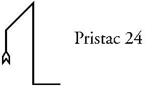
Pristac, Part 24 of 91, 3rd of ZID. Zodiacal king: Zarzilg (Gemini) Ministers: 2302. Mundane association: Gallia (France, Belgium, and Luxembourg)
Friday, July 28, 1995 2:00 p.m.
The vision opened with an image of France seen from space. The sigil of the Part was superimposed thereon; the left two segments were the coast of France, the point at the top was the mouth of the Rhine, and the remaining segments became the Rhine river.
A voice said: "Gallia omnis est diviso in tres partes." Julius Caesar's famous line. The word "omnis" was emphasized. Then the voice added: "Aquitania, Belgica, et Celtica." Then, speaking English: "And the foremost of these is Aquitaine."
Now the image changed to one like the card "The Lovers", save that the angel was clearly female, and the two other figures both male. One man looked upwards towards the woman, the other looked down at the earth beneath his feet. Their clothes changed into that of the medieval upper class. The woman elaborately gowned in white, with a golden tiara holding up an elaborate hairdo. The man looking up was dressed in red and white, with a lion embroidered on the front of his tunic. The other man was dressed in earthy colors, mostly black. I somehow knew these people to be Eleanor of Aquitaine, and her two sons Richard and John.
The voice said: "The mother cannot contain her nature within a single vessel, within the realms of Air; therefor does she divide herself, giving to one the love of the Spirit, to the other the love of the Earth. And between them do her twin sons encompass what can be held of her in the nature of men.
"One seems to look downwards, the other upwards; yet both look towards her. Is she not the enclosing womb, both above and below, and upon all sides? Therefor do those who worship Earth and its wealth worship her as well as those who look upon her divinity.
"Think not that one [son] is greater than the other. They are not above and below, but rather balanced in perpetual interchange. The one who rides high in the sky as often as not is the one who looks downward; he who enters the Earth often serves her Spirit. Who should know this better than you, o son of Set?
"If one son should die, fear not: he shall return. For the Star is reborn from his passage through the underworld; the Snake shed his skin and rises anew. The Conquering Child does not conquer in truth, for his rival is always present, even in death. And his turn in death also comes, when the Serpent wraps him in its coils and smothers his light and glory.
"And there is a third always present in their perpetual conflict; for they are bound by her Love. It is only in the realization of that love in themselves that the conflict ends; for when realization comes, there will remain no difference between them. In the burning passions of love shall they fuse into none, and bring the world back to lay in the Mother's lap.
"Their conflict is truly love, though its form is violence. Yet the Love of Her is present even in the world, without their presence; she sponsors it and promotes it in those who feel her being, whether they know it or not. Desire, romance, the ideals [idealizations?] of men for women, these are of Her as well. They form the perpetual unseen background to the transitory, foreground conflicts of her sons."
[And I am reminded of Frank Herbert's line, that no historian notices the woman working in the field to support her children, because her husband has been called off to war. This is yet another form of love.]
"Now we have said enough; you understand, and can explain if you will. We are done."
Seer's comments:
The visions continue their presentation of various aspects of the Mother. This time it explains the reason for the dual nature of her Sons. And as usual, there are many echoes of Liber AL and Nuit.
The world of the Son, the Air or Ruach, is characterized by dualities and oppositions. The human mind naturally falls into thinking of things in dualistic terms, of "A" and "not-A", of "higher" and "lower". The message of this Part is that even within the Ruach these dualisms are false, because there is always a third factor present, which is the relationship between them. If there is no connection between two things, then they cannot be opposites. Connection requires similarity of nature, a negation of differences in some dimension, which is a power of the Mother. The dualities of the Ruach are really expressions of the Nought of the Mother, and her undivided nature is constantly present in the connection or Love that binds them together.
"The whole of Gaul is divided into three parts." Given the emphasis on the word "whole", one might take this to mean that Gallia is itself a representation of the divine mother, and the divisions are in some way manifestations of her. (Apropos, France is usually symbolized as a woman.) The A-B-C listing of those divisions is certainly significant, but I don't know how.
The second image changes the symbolism of the Tarot card to fit better with the traditional "Twins" myths, in which both human characters are male. In the unspoken subtext of the vision, there was a definite sense that the woman is Nuit, and the men are Hoor-pa-Kraat (Richard) and Ra-Hoor-Khuit (John), thus calling in the symbolism of Liber AL.
Eleanor of Aquitaine is perhaps the best possible representative of the Mother in (relatively) recent history. She was a great patron of the arts, the inspiration for the idealized Love of the troubadours' Romantic movement, and for the high-minded conceptions of chivalry that went with it. But at the same time she had great political savvy and a was competent ruler. These natures, united in her, were split in her sons. Richard inherited the Romantic nature, running off to follow dreams of glory in the Crusades; John inherited her political nature, and sought to fuse the loose confederacy of English nobles into a genuine monarchy. Thus her own undivided nature becomes dual in the transition to the male mode.
Following this, the vision delves into some alternate symbolism for the same thing. The "one who rides high in the sky" is Horus, the one who "enters the Earth" is Set. These two are then connected with Thelemic symbolism: Horus is the Star, Set is the Snake. (This is a revisionist use of these symbols.)
Since both poles of a duality are necessary
for either to exist, neither ever "conquers" the other.
If one pole should be "killed", a new opposing pole
is immediately generated, with a new relationship joining them.
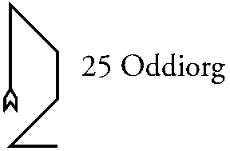
Oddiorg, Part 25 of 91, First of ZIP. Zodiacal King: Hononol (Taurus) Ministers: 9996. Mundane association: Illyria (Eastern coast of the Adriatic Sea, including most of former Yugoslavia. As a Roman possession, expanded to include eastern Austria and western Hungary.) Geoffrey James erroneously lists Assyria for this Part.
Friday, August 04, 1995 3:21 p.m.
The vision opens with an image of the glyph of Taurus; the crescent separates from the circle, as in the 20th Part, but here it moves upwards to become a sliver of moon in the last stages of waning, where before it was a waxing crescent.
There is a bitter taste to the air, like alkaline dust. It brings with it feelings of loss and defeat, of memories so old that their joy cannot be recalled, of things buried and dead. A faint wailing can be heard, as of many women crying for their dead lovers.
Now the voice says: "The moon wanes; the moon wanes; her blood is dried up, her moisture withdrawn into the darkness, her life leached into the Earth carrying away with it all save the dry bones of the land. ["Leached" in the sense that water leaches caves out of limestone.] Her children cannot find her; her husband has sought for her and been disappointed. Nothing remains save the aching hearts of those who have known her, and hunger for her presence.
"We who remain when she is gone have nothing but ashes and heartbreak; our lives are torn and rent, their wholeness shattered and scattered to the four winds. [I get the impression that the spirits of the Parts are those who remain. Possibly this has something to do with the curse of Division that is the Call of the Aethyrs.]
Were she here, we would be one; but she sleeps the sleep that is like unto death, and none can awaken her save one. And he wanders blind through the deserts of men, taking their curse upon himself for their sake, and hers.
"Would that he could find her, and put the taste of himself upon her lips! Would that she would awaken thereby and make us whole again! Would that she would comfort us in her embrace, erasing the tears and heartache of her absence!
"O Men! Do as you would; without her all is futile, your actions, however great, an aimless wandering. Your joys, however powerful, a bitter dust. Nothing lasts; nothing endures; nothing triumphs that does not also fall again. Look on your own works, o you mighty ones, and despair! For they shall not endure. Time shall wear them down to dust, and that dust shall blow away.
"Woe! Woe! Woe! Yea, four and five times woe unto us, and unto you, that our works are of no effect. There is no Progress, but only change; an endless recycling of old times, of old things, dressed up in youthful bodies, but not made new thereby.
"Bitter, bitter, bitter are our hearts."
On a parallel track, happening simultaneously with the above, the wailing in the background grew stronger. An image appears of many women, their heads covered with shawls and dressed in black robes, wailing in sorrow and lamentation. The pound their hands against an ancient wall, a mere fragment of some greater structure that once stood there. It is the "Wailing Wall" in Jerusalem.
The voice said: "Before Solomon, even before Yahweh was a glimmer in the mind of some priest, did women come here to lament the passing of their loved ones. For did not She also lament at the passing of Her lover, Dimuzi? The stones of the wall are Her tears, which made the dust into mud, which hardened into Stone. Her sacred precincts are gone, buried under the rubble of later ages; yet Her memory still comes up from the depths of women, and expresses itself in Her place.
"Yet it is not for Dimuzi that they weep, nor truly for their loved ones. It is for Her that they lament with such force, and for themselves. After many years, they still feel the loss of her light and life, and lament the degradation that loss brought upon their kind. [That is, upon women.] The force of Heaven was withdrawn from them, and they were trampled under the feet of men. Woe has been their lot, and woe is what they express."
(I can sense there is more, but I cannot endure this place any longer. I am being crushed by the despair here. I am withdrawing from the vision.)
Monday, August 07, 1995 1:03 PM
As the vision opened, the sigil of the Part was before my eyes. Behind it, an image of the Adriatic Sea appeared, with the sigil overlaying a portion of the eastern side roughly contiguous with what is currently called Bosnia.
The image enlarged and at the same time transformed in some way, so that a circular region became like a lunar landscape -- or like land cratered by artillery bombardments. The surrounding region became darker, barely visible.
The voice said: "Woe, woe is their lot; from the beginnings of time until the end, nothing but woe and pain. For they have conspired with evil and been touched thereby. Evil eats itself, while good seeks to destroy it; thus nothing they do can have a good end.
Now there was a sound of a great many marching troops. Out of the darkness surrounding the visible circle, there came a horde of men dressed in armor. Each bore a shield with the sun emblazoned on it; each carried a long spear or pike with a golden tip. Each wore a white surcoat with a red eagle upon it, and a black border.
These men streamed towards the area along paths from all sides. Like streams, these paths were narrow at their beginning but widened as they progressed. All these paths merged as they approached the encircled area, and the men spread out to surround it, their spears all pointing inwards, forcing back whatever might seek to leave the circle.
I get the impression that this all refers both to the Roman conquest of the region, when it was a refuge for pirates and raiders, and to the Nazi invasion, and to the current conflict there.
The image transformed so that the lunar component became dominant, and it was the Moon during a solar eclipse. The men surrounding it became the corona of the Sun.
The voice said: "When the darkness reaches its greatest extent, then does the Sun blaze forth, overcoming the loss of the Mother with the glory of the Son. So too in the ages of history, for as the Mother's force faded in the world, so did that of the Son, the Warrior-King, come forth and move into its ascent. The aged Father lies hidden in darkness (as Osiris is in the Underworld) a shadowy, ghostly influence upon events; meanwhile the Son reaches forth and conquers what his Mother built.
"And you ask: Where is the Daughter? I say: She is her Mother, but laid low; there is no difference between them, save that the Son's foot is now upon her neck, holding her down that she might be more conveniently raped. And in that rape does the Son see himself reborn, producing out of her a child which is all His, and none of Hers.
(The unspoken subtext says the Aryan belief was that the deceased father of a king became his tutelary spirit, wielding only a hidden advisory influence over his actions, while the king's conquests -- and the "glory" accrued thereby -- were all from the son's own work. They also believed that a male child was a spiritual duplicate of its father, taking nothing from its mother. So having many male children was a form of immortality, a perpetuation of one spirit through many bodies. The woman was a mere vehicle for this Solar Progress, and did not participate in it herself. But she could become "spoiled" if another man had her, causing the sons to be of a mixed nature. Hence their obsession with making sure that all the children of their wives were theirs. And the Hebrew practice of killing all the men and married women in a conquered territory, while saving the virgin women. And their practice of killing a married woman who had been raped -- she could no longer produce "pure" sons of her husband.)
"It matters not that the Son's belief is false. So long as he believes it, it perpetuates itself in the minds of men even while their bodies partake secretly of their mother's nature.
"And thus the power of the Mother, her life and nurturance, fall down into darkness. What once covered the world now must lie hidden, until the Son eventually falls. Her powers of life, death, and renewal have been arrogated by the Son, but he cannot maintain them; death he can manage, and creation; but support and growth? These are not in his nature. Nor are his creations all that he desires, for they must [emphasized] partake of their mother's nature in order to live; thus they always go astray from his plans.
"Now, in the succeeding Parts, we shall see her again, as often as necessary. But for the moment we shall be passing on to different ways of looking at things, as the Parts shift in their relationships and their powers take over different regions of existence on this world. What was once so, is not now; what is now, will not be so. Change is perpetual in the Parts, and what we see now may not be, when another comes again. But these seven Parts shall remain Hers for some time to come, and shall continue as expressions of Her many natures, which are one.
"We are done."
Seer's comments:
This vision is clearly related to the Moon in its final stages of waning, when the feminine power is withdrawing from manifestation. Traditionally this is a time of ill-luck, of sorrow and death. Things begun at this time are doomed to failure; other things experience a nadir of vitality, an inability to go forward, and disruption from random events. The futility of such times is reflected in Friday's vision. The "wailing wall" scene iconifies it in the mythos of Inanna/Ishtar, in the sorrow she feels at the death of her lover Dimuzi or Tammuz, and then extends it into an expression of the endless suffering of women under the Hebrew dispensation and its successors.
Monday's vision suggests that the endless fighting of the Balkan regions is due to a connection with this darkest of the Mother's phases. It then moves into the final disappearance of the Mother's power, in a perfect eclipse. At the moment of greatest darkness the female powers vanish or are conquered by the Solar powers.
The army surrounding the Balkan region in the vision is a stereotyped Roman legion, surrounding and vanquishing the darkly-lunar local forces. Rome is solar because of the "twin sons" myth of Romulus and Remus. The red eagle is not the alchemical symbol (which is feminine) but the Eagle of the Legions.
When the Son takes over, the sorrow of this last phase of the Mother's power is perpetuated, as if the female powers were "frozen" in that instant of time. The vision relates this to the conquest of the Middle East by the Aryans, and the consequences for the women of the area. It suggests that the invasion was due to the waning of the Mother's power on a cosmic level, related to the passage of the equinox from the sign of Taurus into Aries.
The entire series of Parts from Opmacas to Oddiorg can be seen as representing a single complete revolution of the Moon, passing through all her phases. Opmacas represents the first instant after the new moon, when the balance between the Lunar and Solar forces is just barely shifted in her favor. Oddiorg is the final few instants preceding the new moon. Part 22, Zamfres, is the full moon.
The remaining Parts in the sequence represent the quarters of her orbit. Genadol is the waxing crescent moon. Aspiaon is the waxing gibbous moon. Todnaon is the waning gibbous moon, and Pristac is the waning crescent moon.
As with any group of four, there is
a temptation to connect these with the elements. But aside from
the clear connection between Pristac and the element of Air, such
an association fails. Zamfres, the full moon, has more in common
with water than any of the remaining four. Perhaps a better way
would be to view the cycle as taking place in a vertical dimension,
with the waxing phases representing a movement into complete manifestation,
and the waning phases a movement back out of manifestation.
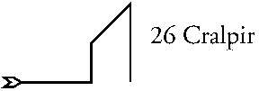
Cralpir, Part 26 of 91, 2nd of ZIP. Zodiacal King: Lavavoth (Sagittarius) Ministers: 3620. Mundane association: Sogdiana
Wednesday, August 09, 1995 1:32 PM
The vision opens with the image of a minute point in a dark space. No, there is no space, only the point itself. Now a line begins to extend downwards out of the point; but before it can extend very far it bifurcates, and splits again, and again. The angles of the splits are strange in some way; they seem to defy measurement or definition. A fractal function of some sort seems to be implied; or something of which a fractal is a reflection.
The splitting continues, each branch of a split extending only a small bit before it splits again. Soon the whole space (and now there is definitely "space" present) is filled with them. The original point is totally obscured, though it seems I can sense a small clear area immediately around it, hidden by the confusion of lines.
It seems to me that each of the bifurcations represents a choice. Rather, the possibility of a choice, for nothing is really manifest in this vision; these lines all exist on some level prior to finite manifestation. I don't know how I know that. Somehow this maze of lines represents the infinite potential present in the extension of the Point.
Now the view recedes so that the lines become smaller. Soon they are entirely lost from view, even though they still fill the space I am looking at. All that is left is a featureless something that seems to vibrate intensely with the possibility of things becoming out of it. All these potentials seem perfectly balanced; there is no tendency of any sort, in any direction.
The vision continues to recede, and as I view ever larger amounts of space, another image slowly takes form. First a pair of crossed lines, intersecting at such an angle that a rectangle drawn between points equidistant from their intersection would be a golden rectangle. Now a closed curve appears centered on their intersection. It is not a circle or an oval, rather as if a golden rectangle had been distorted towards an oval shape. The curve turns into a wreath.
In the center of the wreath a naked female figure appears. Unlike the Tarot card, there is no scarf hiding the crotch; it is certain that the figure is not androgynous. She stands in the pose of Botticelli's Venus. Her right hand rests between her breasts, pointing upwards; the thumb of her left hand rests on her mons veneris, the first two fingers pointing downwards, the others curled under, so that her genitals are framed in the "V" of her hand. One gets the impression that she is stimulating herself with her middle finger.
The voice said: "This is the Virgin of the World, the third of the powers emanating from the divine. [That is, the third path, not the third sephira.] She is the complement to the Will of the Divine, and the Life of the Divine; without her, nothing would be. And she is greater than they, in a sense, for she must contain within herself all the possibilities that they might manifest. And she is less than they, for she serves them (in the end) with immaculate perfection.
"And yet at this point, nothing is done. She is still pure, unsullied; nothing of her potential has been made into form. We who dwell in this Part bask in her unspeakable perfection; we know her, yet she is not touched thereby. God created her for Love; she is all desire, and the object of desire unfulfilled. The creatures [i.e., the four elemental animals] do not encircle her; she encircles them. They come out of her womb in the moment she becomes known.
"Now, if you would understand and know her, o man who is a mage, then do this: In the dark of the night, when the world is still, vibrate the Call and the name of this Part. Assume the god-form she shows here, and invoke her as you know how, with the pleasure of the body. And if she comes to you and embraces you, you are indeed among the blessed of Earth; for only those who are of the highest may know her. And in that moment will you be willing to give all.
"Any further voice could be only silence. We are done."
Thursday, August 10, 1995
I tried the invocation as suggested but didn't get much from it. A few moments when some force surged in, but nothing more. Perhaps it was necessary as a conditioning process, to get my being more accustomed to the power. Will invoke again the regular way tomorrow.
Friday, August 11, 1995 12:12 p.m.
After the invocation, no vision came immediately. Instead I had a strange sensation in the region of my heart, as if something were blowing away all tensions -- indeed, all conditions and qualities of any sort -- and leaving behind a clean, airy sort of energy. It seemed to well up out of nowhere, extend up and down my torso and out the five extensions of the body, blowing out the ends of my fingertips, toes, and the top of my head. For a moment I felt like one of those diagrams of the etheric body in the old Theosophical books.
The power began to blow out through my skin as well, and the innermost shell of my aura filled with it, at the same time taking on the form of a vesica piscis around my body. The sensations from my astral body disappeared, and for a few moments the vesica was my body, its outline my skin, its inside a gate opening into a realm where there was nothing but this power.
The sense of identification faded enough for me to hear the voice: "Only those who become her can know her. Not the mind, not the body, not even the soul and spirit can know her as she is. If there is any sense of outside, of separation from her, then she is not known; only in being [emphasized] her is knowing possible. For she remains virgin throughout all the ages; the ages are not of her, but are beneath her. [That is, Time has not yet come into being at this level.] The creations of man or god touch her not; she is above them, wholly. Now look again."
I fell back into the state (I can't call it a "vision") again; barely conscious of time and sequence. After some time, I saw the image of the Virgin seen before, but the wreath around her was now a vesica like the one surrounding me. She seemed far away, then close, then immediately before me, without any perceptible transition. Her body touched mine, and I literally melted, starting from the bottom up. In moments, all of my body below the heart level had vanished entirely; there was nothing but her and the power out of which she came.
I didn't find this at all disturbing; rather, there was a great sense of release. Where the vanished parts had been, there was nothing but her; it seemed that there never had been anything but her, and never would be. The vanishing continued until I was only a head, looking straight into her eyes from a few inches away. The head vanished and I was a naked viewpoint under her regard. Then even that difference vanished.
(This whole process was very sexual, in a way. It was accompanied by a sensation like what I imagine one sort of female orgasm to be -- the "wave" or "oceanic" sort -- save that it was permanently and without effort at the crest of the wave, a continuous and unending orgasmic peak.)
Now it seemed that I was her, and she was a gigantic figure. The vesica that shortly before had been myself was now her own genitals, glowing in an orgasmic peak. And out of her the entire world flowed -- no, gushed -- in a great unending stream. She pours the world out of herself, and this is the cause of her pleasure. (I am not saying this right, but it is as close as I can get.) She (I) stands with legs apart, head back, her spine arched forward, and revels in that pouring-forth. The eroticism of this is indescribable, and I doubt I will be able to remember it afterwards; it is too much.
I cannot call this process "creative", in the way that the Father is creative. For there is no focus, no distinction, no discrimination, no purpose or intent. It is all the same to her; what comes forth, comes forth, and is as it should be. But at the same time it is creative, after another fashion, for there is nothing passive about the process; it is willed, positive, in no way submissive or receptive. She needs no Father, no husband or complement; she is self-activated, self-fulfilling. Her act is her own triumph, not the fulfillment of another's will.
[A few minutes pass.]
I passed in and out of that state several times, each time being out of it for longer. The voice was right; even this close to the event, I cannot remember it clearly. You can only be that power in its essence, you cannot view it from "outside". I could easily re-enter that state, but for the moment I choose not to do so. It could be addictive.
It occurs to me that the last words the voice spoke in Wednesday's vision is a quite literal prophecy of today's experience. The words were: "And in that moment will you be willing to give all."
This superficially echoes Liber AL 1:60: "But to love me is better than all things: if under the night-stars in the desert thou presently burnest mine incense before me, invoking me with a pure heart, and the Serpent flame therein, thou shalt come a little to lie in my bosom. For one kiss wilt thou then be willing to give all;...".
In the context of the Liber AL verse, "willing" is used in the sense of "amenable", implying that the magician, having been touched by Nuit, would want to abandon all that he is and has for more of her. But here another sense is used -- "active intent in the process of being carried out". At the moment of identification, the Virgin of this vision was will-ing the world out of herself; her intent was to "give all". Thus at the moment I became her, I was literally "willing to give all". This sort of cabalistic near-pun is not uncommon with Enochian entities.
Enough. I dismiss the forces of the Part.
Seer's comments:
Wow.
With this vision, the Parts return to their previous pattern of describing themselves in relation to the Tree of Life. (The seven visions of the Mother seem to take place outside this pattern.) In this case, the path in question is that of Saturn, connecting Kether with Binah in Frater Achad's version of the Tree. Note that this does not accord with the attribute of the Zodiacal King Lavavoth, which is Sagittarius. Little is seen of Saturn, either; only the mathematical images in the first day's vision. The remainder arises exclusively from the Tarot card.
The highest aspect of this path is being presented. It is a complement to the vision of the "Teeth of the Serpent" seen in Part number seven, Samapha. In order for the creative aspect of the divine to manifest its power, it requires a field in which (or on which) to act -- a canvas and materials with which to work; a stone to sculpt and a space in which to put it. This Part shows the first breathing-forth of that complementary aspect from the still point of Kether. It will not manifest in its stable form until Binah; it is the first movement towards Binah that is being expressed.
At its most abstract levels, the space of our universe seems to be based on irrationals. That is, on properties that cannot be precisely defined in whole numbers or as ratios of whole numbers. When the finite mind, the Ruach, tries to define it, it always eludes the effort; one can come arbitrarily close, but never quite reaches it. Thus "all their words are skew-wise." Pi is such an irrational; the field of fractals tiling space is another. So is the Golden Ratio. All these can be demonstrated but not quantified.
Wednesday's vision shows the formation of Space as a field of infinite potentials. Pick any point in the fractal pattern of lines, and it leads to a limitless series of possible actions. The divine creative force, acting on this field and choosing its course in accord with its design, brings about the manifestation of unique occurrences. The potential choices available in the field are so great that no one creative act -- or indeed, any number of creative acts -- can exhaust them. But there is no tendency towards one or another type of creation inherent in the space; its limitless choices are in perfect balance against each other. And at this point in the process, none of that has occurred; the field is still coming into being, and is untouched.
The shape of the wreath is one discovered by a Swedish mathematician in the 1950's or 60's. A solid figure with this cross-section has the odd property of being able to balance on end, even though the end is curved and appears to be unstable. I don't know if it was actually based on the Golden Ratio. The vesica piscis is a figure whose two axes express the Golden Ratio in their proportions. Thus the irrational, elusive nature of space becomes associated with the Divine Feminine.
The appearance of the Virgin transforms all this into a symbolic form, by which the actual power of the path might become accessible. The speech about her is a distorted reflection of the actual power, with a bit of short-term prophecy thrown in for good measure.
About Friday's vision there is little
more to say. You had to have been there.
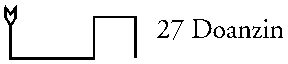
Doanzin, Part 27 of 91, third of ZIP. Zodiacal King: Zarzilg Ministers: 4230 Mundane association: Lydia
August 14, 1995 4:44 PM
At first I could get nothing but a luminous salmon-pink cloud or haze, very ill-defined. Tried doing the Call again, and didn't get much more. For a few moment, the circle turned into a stylized sun, with many triangular rays coming out of it in three different lengths; perhaps it was a compass rose. After that, the vision turned into a welter of fragmentary images, clearly confused and without connection.
It seems the time isn't right yet to do this Part. I'll try again later, or tomorrow.
Tuesday, August 15, 1995 1:38 PM
Invoked Doanzin again last night. Didn't get anything more in the way of a vision. Spent about an hour doing pranayama while using the name of the Part as a mantra, and trying to infuse my astral bodies with the energy of the Part.
I did get the sense that some intervening magickal influences (i.e., astrological) are influencing my perceptions in directions incompatible with this Part. Perhaps it would be best to wait until they pass; but that would be a couple of weeks from now. Not sure I want to wait that long -- might lose the momentum for continuing.
Also got the distinct impression that this Part will not continue the path-related presentations that seemed to be starting again with Cralpir. Instead, this Part is sort of a introduction or overture to the following three Parts, with the fourth following them being some sort of coda. Neither the mundane association (which seemed rich with possibilities) nor the zodiacal attribute will have much to do with what is seen.
Odd that musical metaphors come to mind -- is this significant? I recall when I first looked at the information for the Part and its mundane association, I kept getting the image of a lyre or lap-harp. I thought this was just a random mental association based on the similarity of sounds -- Lydia / lyre. But maybe there's more to it.
Another odd impression that came concerned
the Parts as a group. In some dimension they are not really a
series, but rather like the circular queues used in low-level
programming. There is no beginning or end; you can enter at any
point and start reading. The sigils of the Parts are the "addresses"
of bytes in the queue. And while your read-pointer is at one
position (i.e. the Part you are invoking at the moment) other
"pointers" can be at other addresses in the queue, changing,
modifying, or replacing the "information" stored there.
So by the time you follow the queue around to your starting point,
what you see there might be entirely different than on the previous
pass. I haven't the faintest idea what these "other pointers"
would be, or what would cause them to come into action.
Friday, August 18, 1995 3:48 PM
Invoked Doanzin again according to the usual method.
It's like there are two entirely different natures to this Part -- perhaps more. One of those I sense seems to lead off towards a presentation on creativity or art. The other leads into a presentation on the "outside" [of the Aethyrs, and the Earth in general] and how that outside penetrates and modifies conditions here. I suppose either one of these might connect with the mundane region; Lydia was known for its culture and arts, and the country made its living off of trade.
I feel stuck like Nasrudin's donkey, between two choices equally interesting. It seems wrong somehow to choose either one. There must be some point at which these natures merge.
No use; I can't move into either one. I'll work some more at absorbing and adapting to the Part's power, and try again another day.
Friday, August 25, 1995
I didn't do any more invocations after the last entry. It became clear that there was a buildup of power interfering with my ability to get a clear vision, and that the buildup was increasing in intensity. Seemed best to wait until it faded before trying again.
The interference appears to have been partly related to the powers invoked in the previous series of visions, and partly due to astrological events. The astrological interference reached its peak around 2:00 AM this morning, and quickly fell off thereafter. Another day or two and I expect it will be gone.
There is some question in my mind whether the results of the invocations of Doanzin done thus far have any relation to the actual nature of the Part. It may be that what was seen was mostly related to the interference, and not to the thing interfered with. When trying again, will need to be careful to avoid unconscious expectations based on it.
Sunday, August 27, 1995 12:38 PM
The vision opened with an image of the northwestern Pacific area seen from above. Specifically, of Japan, the Kurile Islands, and the Kamchatka Peninsula of Russia. There was a very strong impression of Kamchatka as a place of unrestrained wildness, and of Japan as a place of unrestrained order, both arising out of the same underlying force. (All these areas are volcanically-built lands.)
Now the image is distorted, twisted in some way about an invisible center. Kamchatka is pulled downwards and Japan pulled upwards and both curve around. They become the Tao symbol, with Japan the Yang and Kamchatka the Yin. Mt. Fuji becomes the small point of darkness within the Yang, and some mighty volcano on Kamchatka becomes the small point of light within the Yin.
Another image begins to develop overlaying the Tao. It is the image of a man of Asian features, dressed in some sort of ceremonial garb. He sits in full lotus position, hands resting on his knees. He wears a loose black long-sleeved shirt, a black skirt with vertical silver stripes. A pointed straw hat (also black) is on his head -- it has a wide brim, like a coolie hat, with a narrow conical center. Over the shirt he wears a ceremonial breastplate with shoulder-pieces that flare out horizontally into points. Upon the center of the breastplate the Tao symbol is shown, overlaid with a pentagram.
(The whole image is a nested double of the numerical series 1-2-5. In the outer series, the invisible powers of the Earth are One, the peninsula and Japan are Two, and the Man is Five -- the outline of a pentagram is formed between his knees, shoulder-pieces, and the top of his hat. In the inner series, the Man is One, the Tao symbol is two, and the pentagram symbol is Five.)
I feel an urge to sit facing this figure, and do so, assuming the lotus position. A flow of power begins between us. I sit for some time absorbing it. (I seem to be still overbalanced on the Yin side at the moment; the forces in the figure are perfectly balanced against each other, producing stillness. In myself they are producing a small amount of torsion.)
It seems that the unrestrained wildness of Kamchatka (and of the greater Yin) is the unconditioned transfinite "stuff" of Binah, out of which anything at all might come; the unrestrained order of Japan (and the greater Yang) is in some way reflective of Chokmah, the creative force which seeks to create everything in its own image out of the stuff of Binah. It is not "Order" as such -- that is, it is not Saturnian. Rather it is ceremony, a pattern of stylized, dynamic movements which define the sorts of ordering that take place in the finite creation. These movements are not themselves Order, but they create order. In a similar way the stylized ceremonies of traditional Japan don't necessarily make sense in themselves, but their repetition by all the people produces a definite social ordering. It is not quite "unrestrained creativity", though that is closer to Chokmah as I understand it.
Now it seems that the pentagram comes out of the interaction of the Yin and Yang; their union produces five children. But these five are not the traditional Elements. Instead they are the five "planes" of finite manifestation within which the lower seven sephiroth reside: the Atmic, Buddhic, Manasic, Astral, and Physical planes. There is a rough correspondence between these and the Elements, in terms of their "density": in order, Spirit, Fire, Air, Water, and Earth. But the innate natures of these planes are not at all elemental.
The Atmic plane is the finite expression of Will. But Will cannot be expressed in a single form within a finite creation; therefor its expression is dual. Geburah represents the force or power aspect of Will, while Chesed represents its unifying aspect. These define the nature and purpose of the finite creation.
The Buddhic plane is the plane of consciousness, of awareness. Here the "self" of the creature resides. It is subordinate to the Will aspect and therefor controlled by it. Its occasional belief that it is "in control" is largely an illusion. Its nature is "connection" or "relationship" or "love" in the divine sense; the conscious being -- under the Will -- reaches out and connects to the rest of the world, so that that will may be fulfilled.
The Manasic plane is the plane of Mind in the narrow sense. Its manifestations are two: Intellect and Desire. The first gives order to the sensory experience of the conscious being. The second gives meaning to that experience.
The Astral plane is the plane of the senses and the feelings derived therefrom. Being watery, it reflects all about it, and so contains the Five and the Two within itself in small form. (The One is not to be seen here.)
The Physical plane is what it is.
(This stuff about the planes seemed to come from outside myself, but I did not hear any voice speaking it.)
From a transcendental viewpoint, Man is the Pentagram not because he contains the five elements within himself, but because he is the only incarnate creature of this world capable of integrating all five of the finite planes into a single active whole. The same planes are present in all things, but in most things the higher planes are inactive.
In turn, Man contains the Yin-Yang and the pentagram within himself in lesser form. Geburah and Chesed are Yin and Yang, and the lowest five sephiroth are the Pentagram, following the traditional attributions.
I sense that I should rest and meditate upon all this before going on.
Saturday, September 02, 1995 1:32 PM
I didn't do any invocations of Doanzin during the last week. Unlike the previous period, there was no sense of resistance or of being in the wrong frame of mind to perceive it. Simply, the time didn't seem right to continue. I think maybe I am running out of steam for the current series of visions.
Invoked Doanzin with the usual procedure.
The vision opened the same as last Sunday's, but went through all the movements in a couple of seconds, ending with the completed figure of the pentagrammatic man inside the Tao symbol, with another Tao on his breast with a pentagram inside it.
Now the man stood up, and the Tao faded from behind him. He assumed a position reminiscent of the dancers shown on Hindu temples -- arms and legs in stylized positions, frozen in mid-movement. His head faced to his left; his left arm was held across his torso with the palm of the hand raised and facing to the right. His left leg was also raised, and the calf and foot almost horizontal to the right. His right arm was raised so that the upper arm was level, the forearm vertical, the hand with the palm facing to the left. He held something like a dorje or a small lightning-bolt in that hand. The right leg held his weight, and was bent slightly at the knee, towards his left. I got the impression that the posture represented a swastika with five arms, whirling rapidly. I don't think a real person could assume this posture; the image seems to be based on an impossible perspective.
A five-armed swastika now appears visibly, and the man fades from view. The swastika is whirling rapidly clockwise, throwing off sparks in all directions as it turns. It is like a whirlpool in some way; it sucks in substance from the lower planes at its center, and throws that substance out again in some random direction through its arms. There is a constant recirculation forming an invisible egg-shape with the swastika at its top. (Now it seems to me that this figure is at the location in the Tree called Da'ath, and is rotating in a horizontal plane.)
Within this egg shape, the image of a babe appears; much like the ending of 2001. The babe sucks its thumb. It's legs are drawn up; I cannot determine its sex, if any.
This is very difficult; I have been infected in some way with the whirling of the swastika, and it is twisting my vision. I have the urge to rest for a while in a certain posture.
I did so, and now my whole visual field is composed of tiny dots whirling around.
At this point I became very dizzy and disoriented, and stopped the vision.
Seer's comments:
This Part has been very difficult to work with, and I am still not certain that I have seen it's nature correctly. The last two invocations appear to be internally and mutually self-consistent, at least.
Most of the Parts so far seem to express qualities of change, dynamic activities within the world, rather than of specific qualities, energies, or spheres. The "lunar" series of visions (posted this last summer) might appear an exception but, as explained in the last comment for that series, they express one complete cycle of the changes of the Moon.
The dynamic events expressed in Doanzin seem to be a general expression of the way in which the transcendental spheres produce the finite spheres "below" the "Abyss", and the way in which the lower spheres organize themselves and return to the transcendental state. It is all very abstract.
The vision of August 27 represents the "downward" part of the cycle, with the divine unity dividing itself into male and female aspects, which create the fivefold "child" that is the finite realm. Kamchatka belongs to "Mother Russia" -- a punning affirmation of its "Yin" nature. As well it is a place very little touched by human beings, in which drastic changes of ecology and terrain occur on a regular basis. It contains many unique plant and animal species, thus representing the way in which Binah is unrestrained by the "status quo" of the lower spheres.
Japan has its long military and warrior tradition to make it appropriate as the "male" side of the Tao. It is intensely -- almost repressively -- organized, in contrast to Kamchatka. As I said, neither of these qualities seems appropriate to Chokmah; the explanation given in the vision seems a bit too flip to be correct.
I suppose one might instead think of these two regions in planetary terms, seeing Kamchatka as Uranus and Japan as Saturn.
The portions of the vision concerning the five lower "planes" in the Tree of Life are fairly standard stuff. But note the emphasis that the conscious self is not the controlling aspect of the individual nature. This is worth long consideration.
The September 2 vision seems to briefly outline the "return" portion of the cycle. The lower five become concentrated and unified into a single being (I assume to be the conscious soul in Tiphereth). This consciousness raises itself up to the highest level of its finite nature, absorbing the two spheres of the finite Will into itself in the process (as represented by the lightning bolt and orb in the hands of the figure). The conscious self becomes the focus for all the energetic activity of the being. Finally it produces the "babe of the Abyss" out of itself, and dissolves into random components again.
It was suggested in one of the earlier
visions that this Part is an introduction to the next three Parts,
all of which have names that come from the Black Cross, a.k.a.
the Tablet of Union. In Crowley's model of the Aethyrs, these
three parts would be associated with the so-called "Abyss",
the region of the Tree bounded by Chesed and Geburah on the lower
side, and by Binah and Chokmah on the upper side. If Crowley is
correct, the symbolism of the last two visions of Doanzin would
seem to be appropriate.
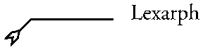
Lexarph, Part 28 of 91, first of ZAX. Zodiacal King: Zinggen Ministers: 8880. Mundane association: Caspis
Monday, October 02, 1995 1:11 p.m.
I am standing at the interface between sea and sky. Small waves chase across the surface of the sea, and its depths have the crystal clarity of Caribbean waters, save that they are tinted purple, not blue. The sky is a brilliant luminous yellow, and the air it encloses has an even greater clarity or transparency than the sea; it actually seems to bring things into a clearer focus than would normally be possible, so that all sorts of fine details would be visible, were there anything to look at here.
Looking into the sea, I see a number of medusae, small mushroom domes with a fringe of small tentacles. Their radial structure is visible through their transparent bodies. They remind me of astrological charts; a small circle in the center, a larger one as a circumference, radial spokes connecting the two beneath the domed surface.
[In passing, I note that deeper in the water there are fish, who never come to the surface but live their whole lives in the darker parts of the sea. They don't seem aware of the surface above them.]
These medusae seem to be striving upwards towards the surface, but most run out of energy before getting there, and fall back into the depths to regenerate and restore themselves. There is a constant flow of them up and down through the water. Deeper down, I can see them dissolving into smaller components in a sort of death; these are not true medusae, but some sort of colonial organism. The small component creatures dash through the water, feeding on something unseen for a while. Then they get together again and form a new medusa, with a structure slightly different from their previous form.
Now my attention becomes focused on one of them that is coming close to the surface; it strives very hard, harder with each stroke upwards. There is an asymptotic effect as it approaches, more effort producing less movement. It never quite reaches the surface, but when it gets within an inch or two, the light from above burns it. I can see it shrinking as it loses mass -- the water is being forced out of it by the heat, along with a great deal of its substance. In a painful reaction it everts itself, and something small is released from its center.
This small thing rises up through the air-water interface, not as if it were pushing itself upwards, but rather as if it were attracted magnetically by the realm above. It rises to a point a few feet above the surface and remains suspended in the air. It is a tiny sphere with two blade-shaped rays sticking out of it, somewhat like the shape of the ajna chakra, save that the rays are oriented vertically.
Now the rays multiply; first three, then four, five, six, and so on in a very rapid way. I quickly lose count; there seems no end to the process. Simultaneously, the sphere becomes slightly smaller, and transforms into a geometric shape. In time with the rays, it runs through the classic geometric solids and into more complex shapes with many facets. All the time it gets smaller, but the facets remain clear due to the quality of the air around it. It continues shrinking until it is a geometric point, but a point that contains within it an endless and evolving set of aspects.
I hear a crack of lightning from above, and the sound of thunder. I sense that some great power has entered into this realm, and the sounds were the opening of the gate that it used. Whatever it is, it is invisible; I feel it moving downwards, filling the air around the tiny star and outwards to a great distance, but see nothing of it. It encloses the star as a parent might take a child in its arms, and I seem to hear a voice saying: "This is my own child, in whom I am well pleased."
There is a sense that this power is in some way hooking itself to the star, putting the star on a tether, so to speak, so that it cannot be lost or mislaid. And now the power moves the star back into the water. It is like a baptism, a blessing. It raises the star, and though nothing different about it can be seen, there is a sense that it has been tempered in some way -- "solidified" is the wrong word, perhaps "confirmed in its innate qualities" would be closer.
Again and again the star is dipped, and each time it comes out it is slightly different, while remaining entirely itself. A voice speaks: "That which comes from the water must return to it. Not for the continuation of development, of evolution; rather to clean it of the detritus of its birth into the higher realm. For when it is once left, the waters of the great sea become an acid, dissolving that which it once embraced and fed. And only that which is truly of the higher nature survives the immersions of the glorious baptism." [I heard several different phrases here: "the baptism of power and glory", "the baptism of life", "baptism of the All-highest", many others all mixed together.]
I am not sure how to describe what happens now. An aura or field of power begins to form around the star. It is being projected out of the star in some way, and its content is a reflection of the star's nature, elaborated. But at the same time the aura is a gate, into a great world possessing those same qualities. Looking through the edge of it, I can sense something of that world. It is a hyper-world: that is, it is not restricted as is our finite world of Earth with its levels and fixed natures; it exists as an expression of the infinite potential of Binah, and is never separated therefrom. But at the same time, it exists in that greater realm of which Binah is merely the local expression. (I understand what I am seeing, but cannot speak it properly.)
[A note added later -- it seems to me now that there wasn't any "gate" into that world; rather, the world was created in some way through the interaction of the star with the "stuff" of that higher realm of which Binah is the reflection.]
Again the voice speaks: "To the Master of the Temple, and to the Magus, are all realms opened. They need not stay within this realm of Earth; their duty to her is ended, their freedom once again regained. To them are the stars opened, and all the worlds thereof. To them the infinite reaches of space become their playground; the stars their toys, jewels to fix the attention of any child, their motions the motions of the life they have come to live.
"If any deny this, saying: 'there is nothing beyond nirvana', saying 'there is nothing beyond God', saying 'the Tao is all', it is only because they are blinded by the robes of Earth in which they wrap themselves. There is no end, anywhere. We say it, who stand at the gate. And of all the angels of the divine, who should know better than we? Our god says it: there is no end. So it must be. If he should lift you out of the Earth and give you the stars, would you cling to the skirts of his robe, or would you step forward to embrace that which he shows you is a wider world, in which even he is not supreme?
"There is no dominance in this wider realm; no rulership of one over another. How can that be, when every step within it changes it, in ways that no god can anticipate? All are equal here, save only in the size [ scope? breadth?] of the changes their movement makes. And when the results cannot be anticipated, what boots it whether they are large or small? A movement by a small one might overturn the changes of a great one as readily as the reverse.
"There is no Path in this wider realm. How can there be, when none knows where it is going? One creates one's own path, by the very movements that change the world. And if there should arise on that path that which is not desired, simply move in another way, another direction.
[Note: I got the impression that the way to prevent these changes from being chaotic is to make one's movements rhythmic. If the movements repeat in a regular pattern, so then the changes will take on the same rhythmic quality, and over time will develop according to what might loosely be called "themes".]
"That is enough, o mage. End this, and write your comment. We are done."
Seer's comments:
From the first instant of this vision, I had a strong feeling of having been here before, though I can find no specific instance in the records I still have on-line. Certainly some of the later section of the vision repeats themes that have presented themselves before in my work.
The astrological attribute of the Part's King is Pisces, but the quality of the vision connects closely with the sign of Aquarius, whose path connects Binah with Chokmah in Achad's Tree of Life. Several elements relate to the sign: the clear, focusing air is a traditional association. The star rising into the air is Mercury, the planet exalted in Aquarius. (The Hebrew name for Mercury, KVKB, literally means "the star".) The lightning and thunder-crack of the god's entrance is Uranus, the ruling planet, which governs all electrical phenomena. The themes of change and freedom from limitation are also Uranian.
The sea of this vision encompasses all of the finite world, as Binah contains all the lower spheres within itself. The medusae are people of the "adept" grades, those who are conscious, living souls; they struggle, like the phototropic medusae, to get closer to the light. The fish in the deeper waters are those whose lives are wholly concerned with existence in the "real", mundane world. With the star, we have a somewhat soggy representation of the three grades of Liber AL.
The "colonial" nature of the medusae repeats a principle seen previously in these visions: that the soul is not a unitary or singular entity, but one composed of many parts in interaction. The "self" is not a constant, but has a variable nature dependent upon the pattern of those interactions, and the relative level of activity of the various components. Change the pattern, and the self changes with it.
The star that arises from the desiccated husk of this self is a mystery even to a Master of the Temple. Its nature is totally elusive; it moves through all things as if they were vapor, taking on the nature of whatever it is in contact with. It has permanence of being but no permanent aspect of any sort. It is the essence of the finite self, but is not the self. It is identical with God, and it is not god. It may be the Universal Mercury; I do not know.
This Part, then, represents the final movement of that star out of the Abyssal Sea and into the clear air of the Supernals. This would be in accord with the traditional association of ZAX with the Abyss, since in an upward movement (that is, going from TEX to LIL) this would be the last of the three Parts of ZAX to be encountered.
The Part is also an opening into what has been called, in my earlier work, the "Star-roads". Information about this has been fed to me in small dribbles over the last ten years. A quicker and more complete revelation may not be possible. This may be because my level of initiation is not yet high enough, and because understanding it requires a radical re-orientation from the traditional magickal view of the universe; a reorientation as drastic as that between the Ptolemaic and Copernican views of the physical universe. The magickal realms resist such changes; to bring it into manifestation requires overcoming a great inertia.
In any case, the specifics given here
probably aren't important to anyone but a Master of the Temple
or Magus. The one point of general significance is that this view
nullifies Crowley's contention that Magi can only work with Words
that are subordinate to the Word of the Aeon.
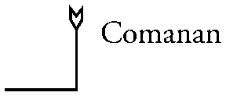
Comanan, Part 29 of 91, second of ZAX. Zodiacal King: Alpudus Ministers: 1230 Mundane association: Germania
(Note: Neither Turner's version of Liber Scientiae nor the diagram of the sigils on the Great Table shows a sigil for the three Parts of ZAX. To maintain the method used for these visions, I am creating a sigil for Comanan that traces the exact positions of the characters on the Great Table.)
Monday, October 30, 1995 11:50 AM
The vision opened with a view of northern Europe. The sigil of the Part was imposed thereon. The vertical bar going from the corner of the Baltic where Lithuania meets Prussia, down to near Budapest. The city itself lay just outside the cut-off corner of the sigil. The horizontal bar went east, roughly following the course of two rivers (Danube and Donau?) to the region of Bern. The western border is defined by the sigil of Gallia.
Now the area within the sigil shatters into many irregularly-shaped pieces, each of which turns a different color. They fly towards me and past me, revealing behind them a region of endless sky, as if seen through a window, in which stands a Ram. It seems to me that this ram butted the area from behind, causing the shattering.
A voice speaks: "What matter is man and his works, in the face of God's power? For they are futile and without gain, and the slightest touch of His Will causes them to fall into dust. What matter is man, that God should be mindful of him? Of no matter, and God is not mindful.
"That which is below is merely a shadow; if it should be gone in an instant, then what loss?"
Now the Ram steps forth through the gap, and begins to trample the surface of the Earth. His hooves leave marks in the shape of the Part's sigil, and wherever a hoof stamps, there are the works of man made into naught. All of Europe is covered with his prints, and then he heads south and east, trampling through the Holy Lands, and on eastward into the ancient lands of India. As he moves he seems to sense something, and his course begins to bend towards a specific goal, lying somewhere in central India.
My viewpoint comes closer to the Earth, and races along the projected path of the Ram. I pass along a great plain lying hot under the equatorial sun. Over the horizon there rises a tower, very phallic, a giant lingam of polished, light-colored stone. About its head there is a halo or aura of power. It is neither a creative nor a destructive power, but simply Power, without object and complete in itself. It does not radiate or extend itself, it simply is, and all about it seems to become less real by comparison with it. (I hear voices in the background chanting the name of Shiva, and feel a sense of anticipation in the air, an electric stillness like that preceding a thunderstorm, but much more intense.)
The chanting becomes more -- frantic? no, enthusiastic -- and I am compelled to join it. The name Shiva arises out of me unbidden, an unconditional, uncaring joy arising with it. In a few moments I feel wonderfully exalted. While the chanting increased in force, the power the was formerly around the head of the tower covers a greater area, until a large sphere around the tower is filled with it.
The ram now charges over the horizon from the northwest, making straight for the tower. He has become smaller, no longer of a size to trample a continent, but has lost none of his force. He races forward, and as he reaches the edge of the circle, he makes a great leap upwards. He flies towards the cap of the tower, head lowered as if to butt it. His head touches the tower, and suddenly -- nothing. Everything has disappeared save for the sense of Power. It seems as if, in an instant too short to notice, the entire world -- the entire universe -- had shattered into its ultimate components and vanished. Nothing is left but the brilliance of the Power of Shiva.
(My own astral body has also vanished; I seem to be nothing but a naked viewpoint.)
Time has stopped; space has stopped.
After a timeless time, which could as easily have been aeons long as moments, I seem to be hovering in some hyper-realm, outside the circle of Shiva. Colored wisps are slowly fading into the darkness around it, like the dispersing smoke of an explosion.
Nothing is happening; I wait.
The wisps finally disperse completely.
After waiting a while longer, I decide to re-enter the sphere. I do so.
Discord! I am immediately assaulted by a thousand different sounds and images. The air is filled with screeching, out-of-tune noises, like the world's worst amateur orchestras, each player out of synch with all the others, each orchestra playing a different melody, each competing to overwhelm the others by sheer volume.
The area is also filled with cacodemons, each zipping about along a different path. They collide frequently and continue on their way. If they could be said to be going anywhere; their movements seem entirely random. Each carries a little fragment of an image in his hands, like a jigsaw-puzzle piece.
Where is the overwhelming Power that was here before? All that seems to be left is fragments, shells, detritus.
Now it seems that some sort of ordering power has come back into the region. I cannot detect it directly, but the sounds are coming into harmony with one another, taking up the same rhythm. As each sound falls into perfect synchronization, it is subsumed into a general note or chord.
Similarly, the movements of the cacodemons are becoming more regular, and they are drawing away from me. They begin to array themselves in offset rows, so that the feet of one are between the heads of the two in the row below. They tile the entire surface of the sphere like the demons and angels in an Escher print. Now each one holds up its fragment of an image before it; the fragments merge into one another, and suddenly the world is whole again. I am back on the plain before the tower of Shiva.
The voice says: "When the spark of will in the Son meets the Power from whence it came, then the world it created for itself is utterly destroyed. All order is lost, all coherence vanishes. The spark withdraws into its God, leaving behind only fragments of its shells. These have no tendency to unity left in them; it resides entirely within the spark.
"And since that which is a Man is such a shell, it also is destroyed when it's spark reunites with its God.
"And yet, such a union is not always permanent, or it seems not so. Something comes forth again from the divine, something which partakes of the nature of that former spark, while not itself like unto a spark. Are they the same? One cannot say. For in God are all things become naught; the discontinuity defies all attempts to unite the Before with the Afterwards. One only knows that the shattered world is reformed, though not unchanged.
"We who dwell in this Part serve only in the re-uniting of the God with its Son; our task ends when the world is destroyed. That which comes after is the work of something beyond our ken.
"There is naught else to say. We are done."
Seer's comments:
The body of this vision seems to have less to do with the mundane region than some of the others we have seen. Yet there seem to be some minor connections. I recall that Alice Bailey once said that the personality of Germany (as distinct from its "soul") was governed by the Ray of Will. And both Germany and Poland have suffered from the fragmentation shown here at various times in their history.
This was particularly the case in medieval Poland, where the custom of primogeniture did not hold sway, and the sons of a noble divided his land among themselves. The consequence was that the "states" became smaller and more numerous with every generation. And since what passed for the Polish government of the time required unanimous consent among the nobles, nothing ever got done at the national level. One might liken the Polish state, without a powerful king to focus the national will, to the conditions described here.
The remainder of the vision is fairly clear. Alpudus is attributed to Aries in the system used for these visions; combined with the power derived from Comanan itself (as part of the Black Cross) it produces a vignette on the divine and personal wills.
One might take the opening portion of
the vision to represent the personal will as it acts when not
under divine guidance; it more or less stumbles around, destroying
as much as it creates, without any long-term benefit. Having sensed
the divine, its movements become more purposeful and directed;
it concentrates itself (as it gets smaller in the vision) and
focuses on attaining contact with its divine origin. (The hoofprints
of this beast are, amusingly, reminiscent of the "footprints
of the Camel" in Crowley's visions.) Finally it unites with
its divine counterpart; the Eye of Shiva is opened, and the world
is destroyed.
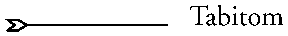
Tabitom, Part 30 of 91, third of ZAX. Zodiacal King: Zarzilg. Ministers: 1617 Mundane association: Trenam (an unknown region. Kelly reported: "Here appear Monkies, great flocks. The people have leather coats, and no beards, thick leather, and Garthers.")
Wednesday, November 08, 1995 2:16 PM
The vision opened with an image of southeast Asia and Australia. My attention was drawn to the great sweep of islands lying between them, from Malaysia onwards into the east in a more or less horizontal line. The Philippines were not included. Like the Japan/Kamchatka region of an earlier vision, I got the impression that these were all connected by a single crack in the Earth's crust, and that they were all linked at a hidden level.
Now the image swooped in on one of the larger islands. (I sense that it doesn't matter which island, they are all the same. But it seems to be either Borneo or New Guinea.) It comes down until I can see the central mountains of the island, and further until I can see a great valley between the mountains.
I see a village there. Huts of various shapes, some round, some long, some simple, others rather elaborate. In one of the larger buildings, the men of the village are plotting a raid; each is dressed in his ceremonial paint and headdress; each has a loincloth on, with one of those weird penile sheaths attached to the outside, like a primitive codpiece. They have wide leather straps around their upper arms and their thighs, to which small pieces of feathers are attached to make colorful designs. Each sits with a spear at his side.
One of the men holds a spherical gourd about six inches across. A hole has been cut in one side, and he sticks his mouth into it. I cannot see what he is doing -- is he trying to lap up something from inside it? Or inhaling something? He pushes his mouth against the gourd with great force for a while, moving his head around. Then suddenly he pulls the gourd away, and leans his head back with a great shout.
The other men shout as well, and pound their hands on the ground in rhythm. Their shout becomes a loud chant in time with the pounding. The first man is shaking, his eyes rolled up; he sways and spasms, his arms flying about. He begins to babble. I cannot understand the words that any of them say, but his speaking seems to be different, a speaking in tongues. His voice rises higher and higher in pitch, until it is near a scream.
Suddenly his voice is a scream; his spasming ceases to be random, and becomes evidence of some great pain. Now parts of his body begin to falls off; it sheds little pieces of flesh and bone with every movement. The other men are alarmed and move backwards, leaving a wide space around him. Even as he falls apart the man shakes even more, until he is shaken into a low pile of fragments, which continues to quiver. Still quivering, the pile liquefies and flows down out of sight through the cracks in the floor. The other men are silent, and go out of the hut, dispersing to their homes in the village.
The image freezes, and a voice comes:
"When men seek to know what lies beyond their world, when they try to divine the consequences of movement into the god-worlds, then the prophecy is always the same: Death and Destruction! The gods are jealous of their realm, and would let no man enter therein; the attempt brings death now, or death later, but death nonetheless. (There is a second sense to "no man"; i.e. they would let Nemo enter.)
"And if one fears, as these do, then truly is the death a real one, with nothing left over. But if one fears not, and advances, then is the world made new, and all things become the divine without ever changing what they are.
"Fear is the killer; Fear takes that which is man and makes it nothing, less than dust. Where Fear is, the spirit is not.
"Cast aside fear, o you men and women, cast it aside, we say! Or turn your violence upon it, destroy the destroyer, kill that which would kill you. Then kill your violence in turn.
"If one is empty of fear, then the death of the spirit is nothing, a moment's disturbance in the continuation of being; that which arises from it is not human, but it contains the human within it. Nothing is lost.
"If we were to continue the vision at this time, then we would show you that fear truly rules in this land. [i.e., the earthly regions governed by Tabitom] But you comprehend it in essence, though the vast extent of their Fear is beyond your comprehension. You may remark upon it yourself for those who read.
"But it were best to wait and come again to this place, and see what occurs on a different level of existence. Then you will have a clearer picture of Tabitom as it is."
I decided to end the vision, thanked them, and stopped.
Seer's comments:
The more primitive cultures in the region shown are among the most paranoid on Earth, thus their association with fear. It is believed that no one dies a "natural" death; every death is the work of some sorcerer, which must be avenged before the spirit of the deceased can find rest. Usually some member of a nearby tribe is determined to be the sorcerer, and the required revenge becomes an excuse for a raid. The other tribe feels the same way, of course, so both tribes exists in a state of perpetual low-level war.
The mythologies of the region are filled with malevolent gods and evil beings of various sorts, all of them out to destroy the individual. Among these is the "man-ripe-making-snake", whose bite turns its victim into a puddle of goo, like the shaman in the vision.
These tribesmen seeking an augury are linked to those who look at the transition from the normal human levels of the Tree of Life to the transcendental levels. As the tribesmen live in fear of death, so do those who think of the so-called "Abyss" as a terrible experience. In either case, the fear becomes a self-fulfilling prophecy.
I was considering doing this vision a couple of nights earlier, but decided instead to work on a short introduction to the 91 Parts Working. It seems that perhaps a bit of the Part came through despite my change of intent, since the introduction I wrote began with a couple of paragraphs about fear in magick:
The price of initiation is to be ceaselessly surprised; to live in a world where the only certainty is that what you believe to be Truth, believe to be real, even what you believe to be yourself will be changed in ways that you cannot anticipate. No matter how great our knowledge and experience, it is always surrounded by the infinite darkness of the unknown; and out of that darkness things can come at any moment to transform our world.
One must advance towards the darkness without fear. Not because there is nothing to fear; rather because fear forces the unknown into its own ugly shape, a shape that we all know too well. Nothing truly new can come into our consciousness while fear dominates. Deny fear its power, deny it any right to control you, and the magickal universe becomes a place of endlessly unfolding wonders. Embrace the unknown and it will reward you by opening up its unspeakable, astonishing variety.
Thursday, November 09, 1995 3:26 PM
The vision opens with the image of a man in the blue robes of an Exempt Adept. He is seated on the cubical stone; his elbows are on his knees, and he holds the sides of his head in his hands, as if he were in pain. The sides of the cube show the glyphs of the planets, excepting Sol, which is in the center. The glyphs are in bas-relief, and are surrounded by highly elaborate images related to the planet in question; I sense the intent is to show that these powers are fully developed and under the Adept's control.
Now I can see into the man's head, and it seems that it is divided into several small chambers; each chamber has within it the image of a smaller man or woman. These reach out their arms and grasp the hands of the ones in adjacent chambers. (It seems they can touch each other, though they cannot move outside their individual cells.) They try to pull themselves closer to each other, to come together in the middle of the man's head, where the sahasrara chakra has its root. They strain together, coming closer to the center, but as they do the power of the divine flowing in through the chakra repels them with increasing force, as does the wall of each one's cell.
They strain ever harder to come together, but suddenly each loses its grip on the others, and they are thrown back into the far corners of their respective chambers. Now they are all dizzy and infuriated; they shout at each other and at the pillar of power that is the root of sahasrara. They are all very agitated; they bounce randomly around their chambers, causing the walls to bend when they hit. The man grips his head tighter and moans with despair. It seems that he would kill himself if he could, but that would require more coordination of those compartmented beings in his mind than he can muster. So he sits and suffers helplessly.
This whole cycle repeats itself several times.
Now the voice says: "Can that which is divided into many parts become that which is single and without distinctions? No; it is not to be. The many shall ever be many; the one (which is None) will not have them.
"How then might a man -- who is a thing of many parts -- become One? That which is the man cannot; he is a thing of the finite worlds, each of his parts distinct and qualified. But there is that in him which is already of the divine. Being already united (and even "united" is a false distinction) it has no need to become One, but merely to make itself known and to take the consciousness into itself.
"But the consciousness is bound into those many parts, which it thinks to be itself. (Though it is not so.) It must become un-bound; it must unravel the skeins it has built around itself, or have them unraveled by a higher power. And what is the loosening of the bindings of Self but the death of the Self?"
Now in the image the pressure from the column of the Sahasrara becomes ever greater, forcing the various small beings in the man's head out and away from itself. They are pushed back into the far corners of their compartments. Still it increases, and there comes into it a noticeable vibration, which shakes everything it touches intensely.
The little beings are so shaken; and like the shaman of the previous vision, they are shaken into pieces, then into a sludge. Finally this sludge is shaken so intensely that it becomes gaseous, losing all form whatsoever it had. The gases (all colored differently) expand and fill the various chambers, and simultaneously cease to be affected by the power of the chakra. That power now radiates without hindrance through the head of the man. The man looks greatly relieved and almost happy.
"Only when the distinctions are destroyed can the divine shine through. That which remains of the parts of the man are no longer distinct, save for the faint coloring each supplies as the light of the divine shines through it. But this is not the end; look again."
I look at the man, and see that the sahasrara is now fully active and illuminated. Its edge expands and curls down until the man's entire head is enclosed within it. The flow of its force is a sphere turning on itself, sweeping clockwise and counter-, inwards and outwards, all at the same time.
This sweeping motion seems to have some effect on the gases. They do not recondense, but within them there appears an image (and it is only an image) of what was there before; each part's little being can be seen, but overshadowed and made transparent to the force of the divine. They no longer attach to each other, but the power of the divine somehow allows communication between these images in a reflection of their previous activity.
The man stands up and turns to look at the cube on which he sat. He smiles and shakes his head. He goes out of the image for a moment and returns pushing a comfortable-looking padded chair or small couch, which he places behind the cube. He goes out again, returns with a can of Pepsi-Cola and a bag of potato chips. He sits in the chair and pops open the can; he opens the bag and sets it on the cube. Then he leans back, puts his feet up on the cube, and relaxes, eating and drinking at leisure.
I sense that the voice begins to say something else, then decides it unneeded. It indicates without speaking that there is no more to see or hear for now, so I end the vision.
Seer's comments:
Up to the Exempt Adept grade, the path of initiation (follow cabalistic methods) is one of building connections between things; between the parts of the mind; between various things in the contents of the mind; between the mind and the "external" magickal universe. The magician builds meta-connections on top of connections, traveling up through layers of greater and greater inclusivity until the almost the entire being is melded into the experience of a small number of archetypes and related "pure" energies. The accompanying initiations are grand experiences, so much so that they pass beyond superlatives. The cubical stone of the vision is the structure he has built through this work.
But these archetypes, while definitely of a very high level, are still finite in some sense; they are conditioned, they have definite perceptible qualities even if they do not have a perceptible form. There is a limit to their possible mergings; at some point one reaches an irreducible minimum of them necessary to describe the magician and his perceived reality, and that minimum number is always greater than One, just as the cube has more than one face.
The momentum of the magician's work all pushes towards achieving an impossible union between these archetypal elements. All the force he has tries to push them together, while their distinct natures exert an equal force against it. Like the little beings inside the man's head, they can relate and interact with each other, but cannot become other than what they are.
The Adept of the vision reflects the problems of the human who is approaching the so-called "Abyss". He finds that he reaches a point where all his straining will not take him permanently to a higher level; no matter how hard he pushes, he always falls back to his previous condition afterwards. And the rebound from his efforts often puts him into a state of temporary mental disorganization, where the bindings between his archetypal elements are stretched in equal proportion to the effort he had exerted.
This stretching is actually of benefit, though it is a hideously unpleasant experience. The very unpleasantness encourages the transcendental spark within the finite being to cease its lifelong habit of identification with that person. Even though that spark is still not aware of its transcendent nature, it begins to perceive the finite being as a hindrance. Gradually it reaches a state of negativity or rejection with respect to the personal Self, and this rejective force starts a breakdown in the skein of connections he has made over the years, releasing the energy bound in it into a diffuse state. (In the vision, this corresponds to the expansion of the sahasrara and its shaking-to-pieces of the beings in the man's head.)
As a consequence of all this, the great
structure the adept has built through his work becomes just another
object-among-objects in the world of his finite perceptions. The
excitement of building it leaves him, as do the glorious experiences
he had in the process. Life becomes plain and prosaic again for
a time, and all he can do is wait until the moment is right for
the final movement into the transcendental levels. This is represented
by the last image of the vision, where the cubical stone becomes
a mere coffee-table for his snack.
Examining the three Parts for the Aethyr ZAX, it is apparent that they confirm a relationship between this Aethyr and the transition between the finite and transcendental realms. But considered in the overall sequence of Parts, Crowley's correspondences between the Aethyrs and the sephiroth are not confirmed. We have already descended to Tiphereth via several paths before encountering these three.
Each of them looks at the same process, but with the emphasis upon a different aspect in each. Since the Parts appear to be going in a sequence from top to bottom of the Tree of Life, the most transcendental of the three was seen first, and the most finite last. Note that in the vision of Lexarph, the dominant theme is that of Aquarius, the horizontal path that lies immediately above the "Abyss" in Frater Achad's Tree of Life. In the vision of Tabitom, there are several references to Death, Scorpio, the horizontal path that lies immediately below it. The vision of Comanan, with its references to Shiva, relates to the path of Fire, which connects Kether and Tiphereth, and crosses both of the other two paths.
Note also that the "official" attributes of the Parts reverse the order of the dominant attributes in the visions. Where the latter go in the sequence Air, Fire, Water, the former go in the sequence Water, Fire, Air. One might speculate that the element of Earth is also present, but concealed, since the double cross formed by the paths on the Tree is the same cross seen on the staff of the Heirophant, the card of Taurus.
The submerged medusae of the first vision correspond to the Adept of the last; the transition between water and air in the first vision corresponds to the second vision. Tracing additional connections, it seems that the Tower of Shiva in Comanan becomes the pillar that is the root of the sahasrara chakra in Tabitom. The frantic chanting in Comanan might become the shaking vibration of the Tabitom vision. Each of the visions contains parts of the others.
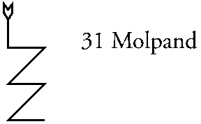
Molpand, Part 31 of 91, 1st of ICH. Zodiacal King: Lavavoth Ministers: 3472 Mundane association: Bithynia (northern Anatolian coast, bordering the Sea of Marmara and the Black Sea as far east as the Ince peninsula.)
(Note: The first fifteen Parts came from the Water Tablet. The next fifteen came from the Fire Tablet and the Black Cross. Molpand and Usnarda return to the Water Tablet before more Parts from Fire are presented.)
Saturday, November 11, 1995 7:47 p.m.
(I note that today is exactly ten years from the start of the Earthworks project, which was the beginning of my maturity as a magician, and of my significant Enochian works.)
Difficulty getting the invocation started today. Every time I formulated the intent to do it, someone or something would interrupt. The last interruption was a cat who jumped up in my lap and put his face directly in front of mine, staring intently, while I was vibrating the Call of the Aethyrs. I ignored him and continued; he lost interest as soon as I completed the Call, and left the room quickly.
The vision opened with the image of a rayed sun; in front of the sun stands a god or angel in white robes, with his arms spread in benediction. In front of him is a small shield with a circle engraved upon it. No, I am wrong, the shield and the sun are actually the Enochian sigil of Fire, with the central two circles pulled forward so that the being can stand between. But it is all in gold and silver, not in the colors the G.D. uses.
Beneath the sigil and directly beneath the hands of the being are two pillars, both white. One (under the being's right hand) is topped with a sun, with twelve triangular rays; the other (under the being's left hand) is topped with a crescent moon, surrounded by thirteen rays, but with the points directed inwards.
I get a couple of quick impressions at this point. First, that the two pillars are the columns of the Tree. Second, that the horizontal bars in the sigil of the part are the horizontal paths of the Tree. Third, that the three pairs of letters in the god-names of Six letter (in the Lesser Angles of the Tablets) are equivalent to the pairs of sephiroth at the ends of the horizontal paths. (This last does not feel like a non sequitur, but I do not grasp the significance of it.)
I vibrate the name of the Part again, and the sigil of the Part appears imposed on the pillars, like the path of the Lightning Flash. [The implication is of the Flash, even though it is reversed with respect to the usual form.] Now the sigil seems to move, and become a series of waves passing through the channel between the pillars as if they were a wave guide. At the bottom of the pillars the waves spread out and towards me, becoming a series of circular waves as on the surface of a still pond. The image of the pillars and angel is distorted and then hidden by these waves, as would be an image reflected in water.
The circular waves pass beyond my sight in every direction, with new ones continually replacing them.
Now a new set of circular waves enter in from the four diagonal corners of the field of view, as if the original wave has been reflected by some surfaces out of sight. These waves interact with the outgoing waves to produce an interference pattern. The pattern is four rectangular arrays of diamond-shaped high-points in the water, separated by vertical and horizontal lines passing through the origin of the outgoing waves. These lines seem to be areas where the interacting waves cancel each other out.
The positions of the points seem fairly stable, though the continual movement of the water lends them a shimmering quality. And now a new overlay comes in, and each point is surrounded by a square; all the squares join to their neighbors, and they become the four tablets of the Great Table.
The points of water suddenly become like little flames, each enclosed in its square. A little flame of divine power, I think. The receptiveness of Water has become a positive upward striving, fiery in nature. Each of the flames is a prayer to God; and the four Tablets are in themselves an invocation of the highest God of the Enochian universe.
Now the original image becomes visible again behind the Tablets. Its influence had never truly departed, just been concealed for a time. The force moving between the pillars provides a vertical organizing influence, so that the tops of the arrays of squares (as viewed from my POV) become "up" rather than all squares being on an equal level. And the flames become organized into the Names written on the Tablets, with their hierarchies and functions.
The upward striving of the prayers that are the Tablets produce a response from the angel (which I now perceive to be an image of the Enochian God). But where the original impulse moving downwards was fiery, this response is watery, like a blessing with holy water.
And a voice says: "How can God not respond, when that which calls is Himself? How can He ignore the prayers of the little flames, when each flame is the expression of His own desire?
"God has extended himself into the world, and created therein a continual flow of himself, going from the lowest to the highest levels of existence. He puts forth his power, and the Tablets are created in response; the Tablets put forth their enflamed hearts in prayer, and He responds by lifting them up. So it ever has been, from the moment of our creation; so will it ever be, until Time stops and the worlds are again withdrawn fully into himself.
"And why has God done this? So that man might have the means of rising to meet him. For where God is not directly touchable by man, yet these little flames (which are equally God) are accessible to all, be they even of the lowest. And in the voices of the Calls can man attach himself to those flames, and make them a part of himself; and thereby is he made to be God in part, rising, like all the flames of the Tablets, up unto God in his heaven.
"And yet, you think, is it not said: 'it repenteth me I made man'? But think again: does not repentance require contrition, that is, the will to make right what was ill-done? And so it is; for God, in his expulsion of man from his high estate, did great ill; towards a good end (as you know) but it brought evil and pain upon humankind which was not deserved. And so god, in contrition for his acts, has freely given unto man that which will bring him back to his estate.
"And also has he sent his angels unto those who could bring his act to the attention of men, in their time. And sent others to use his creation as it should be used, that the secret minds of men might sense its purpose and become attracted, each in their own time.
"Let those be lifted up, who were thrown down; let those be made whole who were split into many parts; let those be given life who were dead to the spirit; and let those who have lived in hell be given heaven. When and as they chose it, and not as God wills. [This emphasized.]
"For He forced man into his scheme, and true contrition, true remedy of his acts, thus requires the abdication of force. He must give freely where he once took; he must place each in their desired places, where once he gave no heed to desire. He must give choice, where once there was no choice given. And his act of contrition must continue until every man, both male and female, has transcended the consequences of His acts.
"And what of you, o man, who is also a mage, and something like unto a small god? We see in your mind the glimmerings of some understanding, but not all; therefore let us make it clear.
"It is true that you were the instrument of the Fall that God engineered, the seed (let us say) upon which the manifestation of humanity was formed. [The implication is of "seed crystals", not of plant seeds.] Therefor, you think, you might also require some act of contrition in this regard. Yet it is not so, for when you caused men to fall, did you also fall with them, and take upon yourself the same burdens as they; forgetting your high estate, forgetting your rightful place among the stars (save for that unending, unquenchable longing). You have lived as a man, suffered as a man, even though this was not necessary to the accomplishment of the task. And thereby have you mitigated any ill that you might have done.
"Why then, you think, does your magickal oath -- the only oath you have ever taken with the full force of your being -- in so many ways reflect the requirements of God's contrition? It is simply said: you are one of us. Like we who were created by God, you (who were not so created) have accepted the joy of Being in and with God. We give as God wills, because we were made so; you give as God gives because you love God, and do his work. And if God desires to give freely and without restriction unto man, in mitigation of his acts, why then, so do you do. What more reason need there be?
"Now we have said enough for now. Rest you, and think upon what is said. And in the light of day, continue with this sphere, this Part, and see what more is to be seen. Our blessings and love upon you, our brother and lover, and go well. We are done."
I ended this vision.
Seer's comments:
I don't know whether this vision expresses the actual content of the Part, or is simply a commemoration of the anniversary mentioned. Since I got flashes of the opening image the preceding day, during preparations, it might possibly be the former, but with the content tailored somewhat to the day. Another session with this Part will tell.
The revisionist myth of the Fall, and my supposed part in it, are described in detail in _The Book of the Seniors_, a series of visions from the Earthworks project. This present vision links the Enochian system into that myth directly for the first time.
The idea that God might make mistakes, or at least suffer the pangs of conscience, is rather radical from a standard religious point of view. But it is perfectly consistent with the views expressed in my Enochian work over the last ten years. There is no "absolute" God, no "ultimate" creator. There are only local gods, though "local" is an elastic term; it might include a portion of a single world, or an entire galaxy.
For a variety of reasons, gods in the Enochian view are neither omniscient nor omnipotent. The most important of these reasons is that the creations of different beings interact with each other, producing results that are not predictable by any being. In an environment of multiple creators, the unexpected is to be expected; surprise lurks for every being, no matter how evolved. The intrinsic unpredictability at the roots of matter adds yet another dimension of surprise.
One can imagine that the actual results of an act of creation, including unexpected aspects, might show a creator a better way that it could have been done in the first place. Or that, having taken action to stop the effects of some error, a creator might want to change his mode of action to get on with the desired course of things. Either one of these might apply to the God depicted by the ministers of Molpand.
Or they might not. In any case, it seems that the Enochian magick has been provided as the spiritual equivalent of a public elevator, useable by anyone with a minimum of skill and proper intent. My experience and observation confirms that this is true in practice. Even those who use the system with the most puerile of motives find themselves changed by it, and pulled into the path of initiation if they have any tendency at all in that direction.
My experience also confirms that there are no conditions of any sort attached to this magick. It is a great and valuable gift, given freely and without expectation of return. There is no quid pro quo; one need not worship (or even believe in) its god to gain its benefits, nor conform one's thoughts and actions to any particular course. The only price is that one is transformed by it, in accord with one's own nature. That nature is brought closer to its perfection, slowly made more divine over time.
Tuesday, November 14, 1995 1:35 PM
The vision opened with a view of northern Anatolia, centered upon the peninsula that points northwest towards Constantinople. Now the sigil of the Part is overlaid on the peninsula, distorted to fit. Its topmost point is at the crossing between Asia and Europe; it's lowest crossbar at the base of the peninsula.
The view moves in towards the great city; I see it from above, and in the center is the beautiful temple, Hagia Sophia.
[Interrupted once again at this point, by a delivery truck with new kitchen furniture. An hour later, I get back to the vision...]
This is the pre-Islamic version of the Temple, without the four minarets. It may even be the original; the dome seems lower than I remember it. But there are four buildings in a square around it, at some distance. Each of these seems in some way to be a manifestation of one of the elements, or one of the four directions. (I suspect they never existed in reality; I don't recall anything of the sort.)
There is a sub-vision saying that this image also relates in some way to my Enochian Temples. Not to the basic temples, but to the meta-temple that sometimes forms when the magickal charge is particularly intense. This meta-temple is also "hagia sophia" -- "divine wisdom" in manifestation. In fact, the form of the meta-temple is almost exactly that of Sophia; roof domed instead of the conical form of the regular temples, vaulted entrances, large open interior space, etc. The four smaller buildings might be representations of the regular temples surrounding the meta-temple.
[See the visions in The Lotus of the Temple for one appearance of the meta-temple. See Enochian Temples for a description of the temples of the Tablets.]
Now the view backs up into the sky again, and it seems that the Sophia is glowing with some inner power. It radiates, but is constrained by the bounds of the peninsula on which Istanbul stands, in the east and west. On the north some other power presses down, again constraining it. So the power flows south, crossing over the straight and into Anatolia.
The power flows down the peninsula, and when it reaches the base, it spreads out in a semicircle, covering the area between the seas and Ankara. This area remains filled with power, but now it flows outwards in circular waves, just as in the previous vision.
To the northwest, the wave strikes something, and the response is the precipitation of a multitude of documents; reams of papers falling through the air and littering the countryside. To the southwest, it strikes the communities of northern Africa; some of these build walls around themselves, and become silent. To the northeast, it strikes many communities, and these become centers of radiation themselves, putting out their own circular waves. And in the southeast, a great flame springs up, and washes over the face of the Earth.
(I get the impression that all this is some obscure cabalistic pun or joke, true in its own way, but put forth in a mood of fun. Now it becomes clear. The Europeans reacted to Byzantine Christianity intellectually, producing tons of theology to show that their own Roman version was the True Church. The peoples of northern Africa reacted by producing monastic communities, wherein weird combinations of Christianity and local faiths were practiced. The Russians and eastern Europeans got into the spirit of the thing, trying to become more Byzantine than the Byzantines. And the Arabs reacted by producing Islam. These all correspond to the four Tablets in the revised Great Table. )
This isn't getting anywhere. The interruption threw me off stride. I need to stop for a while and regroup before continuing.
8:23 PM
The vision opens as if a veil was torn in two, and with it was ripped away the "space" in which my circle was formed. Now that circle hangs in the air like something out of a Dr. Strange comic book; I am still standing on it, but simultaneously see it from above and behind. In front of the circle, huge in comparison, lies the meta-temple spoken of earlier. It is composed of energy, pearlescent and allochroous, but with every edge outlined in black. On each face of the Temple, a pointed vault like the upper half of a Vesica Piscis marks an entrance.
There is a definite sense of "reaching upwards", of invocation in the fabric of this temple, like the prayer-flames seen before, but multiplied ten thousandfold. It is a prayer so strong that there is no question but that it will be answered, and is answered continuously.
At the same time, there is a sense of reaching outwards, of a power of divine love projecting in every direction from it; not calling or pulling, but freely flowing into the world. (This and the prayer-force may be the same, separated only in my mind.)
A deep, resonant tone sounds; a tone from a bell so perfect that it sounds before the mallet strikes it. The tone repeats; and again. Then it is silent, but all of space still resonates to it.
A voice says: "What can man know of God, save what God gives to man? And yet, if God gives all, and is free and in all, then man can know God in all things, through all things. It matters not if one says "This is Holy" of one thing, and of another "This is not holy." For every man sees the divine in the ways that his (or her) nature allows. And every aspect of their nature has God at its root. Therefor if one is to know God, then one should know himself; as completely as possible. And then one should leap beyond oneself. It matters not in which direction one leaps; one is as good as another. God is in every direction, including no direction. [That is, the direction that is not a direction.]
"And this Temple, built by God upon the foundation of yours, is as much Hagia Sophia as is that mundane place of that name. Moreso, since this Temple is wholly of God; its every stone is of the divine substance, wrought into form."
I see now visions of my four temples of the Tablets, each one bright with the colors of the squares out of which it was built. And the altars of those temples are in their outside positions, surrounding each as the small buildings of the earlier vision today surrounded the Hagia Sophia. And these four temples surround the meta-temple as their altars surround them.
"Think not, o man who is a mage, that your temples caused God to build his because he liked their form, or because you are in some way in his favor; we speak not of that. But as was said, the four Tablets are themselves a prayer unto the Great God who is the creator of the Calls and Tablets, who gave them to man for his use. And as by his covenant he responds continuously to those prayers, so then must those prayers, when built into a yet mightier form, produce a yet mightier result. You had the shaping of it, but the power that called and the power that answered are both of the divine.
"And yet, this form is also eternal; have not many men sought to use it in their construction of places of worship? Not only the Sophia, but also those others, foursquare to the world, but with a domed eye unto God. [E.g., St. Peter's]
"And every one of these, in this minds of their creators, brought the power of the divine into the world. So you are not greatly different from them, save that yours is of a finer and more effective substance to begin with.
"Now, if your Temple is opened by a man, it cannot be but that he will be raised closer to the divine thereby; for in it is the power to lift and transform, which is the essence God gave to the Enochian powers, brought into a state of perfect effectiveness. No man can touch it and be unchanged by it. Thus few have used it, though it is widely known. Men fear change, even as they seek it; and when they sense that change is utterly certain, that their souls will be transformed, then do they back away, and cover over their fear with thoughts of due caution.
"Only the brave, the desperate, or the truly adventurous dare take it to its full power; for others, the thought of it is transformation enough. Let them be; seek not to encourage. Those who should [use it], will. And if in several centuries, only a triple handful should follow where you have led, then you have had success. Not all things are best measured by quantity.
"We are nearly done now. Let us finish by saying that what you have seen is a true representation of the powers in this Part. It is not just a commemoration, as you have thought; the timing is the work of the divine, enabling that which has been to come together with that which is now, in perfect alignment. Speak to this, and you will speak true. Amen."
The presence of the voice faded, and along with it the images. I ended the vision.
Seer's comments:
The mundane association shown follows the original attribute for the Part, save that it appears to include European Constantinople/Istanbul. The next Part in sequence, Usnarda, is supposed to be that city according to Kelly. But Usnarda's mundane association is called "Graecia", which suggests that the "great citie with the sea hard by" that Kelly saw is in fact one of the seaports of that land, possibly Piraeus.
Unlike the immediately preceding Parts, this Part is entirely "below the Abyss". It works in the realm of archetypes, not in the unconditioned transcendental reality. Thus it is concerned with the formation of such archetypes, particularly those that draw men towards the divine.
With the movement down into this region of the Tree of Life, the creative Will or Being of the Supernals becomes transformed into a power of Love, of relationship. It is an active, connecting power. The powers of all the lower sephiroth are subsumed into Love, for every one of them is a power that deals with relationships between things. "Love under Will" is not a philosophical principle that we can follow or not, as we chose; it is a basic and unavoidable condition of existence. The god's stated reason for creating the Enochian magick itself fulfills the conditions for being called an act of (unconditional) Love under Will.
Every archetype is an embodiment of Love. Every one is a distillation of some quality that is present in a multitude of things, and therefor expresses an essence of the relationship between them. The form of the Hagia Sophia and the meta-temple is an archetype of archetypes, representing the relationship between the transcendental Being (represented by the dome of Heaven in each) and the finite world as a whole (represented by the foursquare bodies of the Temples). And within the finite world, the relationship is reflected again, in the four buildings that surround the Sophia, and the four elemental temples around the meta-temple. The elemental temples in turn reflect it down one more time, in the four sub-elemental altars that are placed in the quarters around each temple. This is similar to the pattern shown in the Part named Doanzin, save that the fifth point of the pentagram is here the dome of the temple.
When the Voice says that it is God who
calls and God who answers, it speaks not only of the Enochian
system as such. In every true calling towards the divine -- whether
by prayer or by invocation -- it is the divine essence in the
human being that calls, and it is the divine that responds.
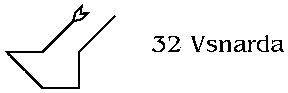
Usnarda, Part 32 of 91, 2nd of ICH. Zodiacal King: Zurchol. Ministers: 7236 mundane association: Graecia (specified to be Constantinople or Istanbul, not Greece, by Kelly).
The vision opens with an image of South America; it rotates 180 degrees, so that south is at the top, and zooms in rapidly on the southern coast of Brazil, and focuses on the city of Rio de Janiero. The sigil of the Part is overlaid on the bay around which the city is built. The Sugarloaf is between the start and endpoints of the sigil.
Now it seems that I am looking at the city from one of the hills surrounding it. I am one with the great statue of Jesus that lifts its arms over the city. A voice speaks from behind me; I (or the statue) resonate with that voice, and project it outwards onto the city. It speaks in Enochian, a variation on bits from the first Call: "Casarma ohorela, od farzema znrza adna od gono IDOIGO." Unto you I made a law, and you raised your voices and swore obedience and faith unto Me. This is not the voice of the Part, but of some god.
The city responds with joy to the voice; it seems that Carnival is in progress. Sounds of happy, stimulating music drift up to where I am; also voices, none of them sorrowing.
"The Law was not restriction," says the voice, "but rather to take joy in the love of God. And to live one's life in that joy. The world has too much pain; should god add to it? No; therefore do not excoriate yourselves, nor do pain unto others in My name. Flay not your bodies and souls; you do Me no praise thereby."
"You are vessels for My love; fill yourselves to overflowing, for there is more than all of you can hold. Pour yourselves out onto the world, for there is always more to fill you again, ever and without end. Amen."
I get a couple of impressions here. First, a true Carnival is not a period of license which must be repented at a later date. It is in itself an uplifting of the world and a connecting of the world and the body to the divine, through celebrations and joy. The word is "carne-", flesh, plus the word for "to lift", literally an elevation of the flesh. And when the flesh (that is, the worldly being of the person) is lifted as high as it can get through celebration, then should the attention be put away from fleshly joys and directed to the divine, so that it can come down and fill the person, raising him or her yet higher.
Now I get an image of thousands of people trekking up the side of the mountain on which I stand, carrying lamps and candles to represent the flame of love for the divine that is in their hearts.
Another voice comes, this one seeming to be the voice of the Part:
"When one climbs the Mountain of God, one must suit one's actions to the nature of the height at which one is traveling. On the lower slopes, the land is covered with plants and sweet fruits of tree and vine; therefor in traveling those slopes one should appreciate what the divine has put there for one's pleasure, and share of that abundance with one's fellow-travelers.
"But on the higher slopes, the divine gives a different sort of abundance. The plants recede, leaving only stony ground; all that is needed to push oneself ever higher. But in their place, there is the clear air of the Spirit, and the light of the Sun unhindered by the clouds of the lower regions. One partakes of this, and his spirit is fed thereby, and is strengthened for the journey unto the pinnacle.
"And when one reaches the pinnacle and unites with the beloved, then one turns and from that peak sends the divine love back into the world, to those who have not yet attained. There is nothing more to be done, within the worlds of men; nor is there need for any more."
["Unites with the beloved" is deliberately ambiguous. The beloved can be either the divine itself, or another person who is also at the pinnacle. If the latter, then the two burn themselves up in the act, and each becomes wholly god for a time.]
The image and the presence of the voice fade away, though the spirit of the Part remains. I end the vision.
Seer's comments:
The Zodiacal King ruling this Part is attributed to Capricorn; hence the images of mountains predominate.
There were several side-impressions not mentioned above; they flitted away too quickly, or were lost in the generally pleasant feel of the Part's power:
The Sugarloaf is an image of the Yoni; placed between the endpoints of the sigil, at the mouth of the Rio bay, it implies that this love pouring into the world comes from Binah, specifically from that aspect of Nuit which resides in that sphere.
The statue of Jesus on its own mountain is an expression of that transcendental love within the finite world; an image of the divine for those who can not yet see it directly, a goal for them to work towards. Thus the voice of the God passes through the statue before passing down to the world. The themes of sacrifice and suffering often associated with the Christian savior are wholly absent; only the love is present. The voice of the god later implies that the sacrifice and suffering are perversions rather than an intrinsic part of the symbol of his Son.
This flavor of this Part has a lot in common with the previous one. The same theme of invocation and response underlies it. The god sends his spirit into the world, producing a response from the people; the people invoke the god in joy, and he responds.
As seems usual in these visions, certain Christian ideas are confirmed, while others are simultaneously turned on their heads. Carnival is typically considered a period of officially-sanctioned sinning, a sort of safety valve for the pressures built up by being "good" the rest of the year. It is followed immediately by a period of self-denial and repentance in Lent. But here the Carnival is itself a form of praise of the divine; not sin at all, but simply the sort of worship appropriate for the level of existence on which it occurs. The worldly being is raised up, through worldly joys, to the margin with the world of the soul. The period of fasting that follows simply continues the raising; having reached the highest level possible through worldly activities, one has to put them aside as distractions and use different techniques to go higher. Repentance and self-abuse are not part of it.
The final achievement within the finite world is represented by the union of the worshiper with the "beloved". This is meant in both a symbolic and a practical sense.
In the previous Part, I said that Love (in the sense of unconditional Relationship) is the one aspect that all spheres "below the Abyss" have in common, and the one commonality between all the Ideals that are the products of cabalistic and magickal synthesis. Love is in fact the ultimate synthesis that can be achieved within the finite levels of existence.
Further, the experience of that unconditional
Love, existing in the pure state of Love, brings one closer to
the transcendental levels than is possible in any other state
of consciousness, without actually entering into the transcendental
spheres. It forms a near-perfect counterpart to the nature of
Binah, minimizing (though not eliminating) the problems of transition
into that sphere.
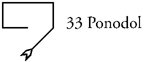
Ponodol, Part 33 of 91, 3rd of ICH. Zodiacal King: Hononol. Ministers: 5234 mundane association: Lycia (small country on the southern coast of Anatolia.)
Thursday, November 23, 1995 2:23 PM
Invoked Ponodol using the usual method. As I completed vibrating the associated names, a cloud of white smoke drifted down outside, momentarily obscuring the view through the bank of casement windows in my workroom. I thought there might be a fire, and ran outside to check; examination of the house from all sides did not reveal any fire, or any other source for the smoke.
I returned to my room and invoked the names again.
The vision opened with an image of men and women working in a field. They are in a long valley beneath a massive mountain range. Bare rock begins not far above the valley floor, and half-starved goats poke among the rocks for food. The people wear smocks of rough-woven cloth, or simple breechcloths. Their implements do not appear to be of very good quality.
Now a troop of soldiers comes down the valley from the northeast, marching down a dirt road through the middle of the valley. They carry spears and short swords, both with bronze blades, and wear back-and-breast armor and plain helmets with noseguards. They seem derisive or contemptuous of the people they are passing, as if they were not worth the trouble of raiding and looting.
The soldiers continue southwards, apparently on their way to some seaport.
The voice says: "Those who travel the clear roads of life, towards the obvious goals, sometimes pass by the greatest of treasures without seeing. And those who seem the lowliest sometimes hide in their midst that which would give any man pause, should he come across it in some other venue."
Now it seems that the people are moving towards the side of the nearest mountain, and are chasing away the goats from one particular area. They roll aside a great stone (which seems much lighter than its size would warrant) revealing the mouth of a tunnel. Some of them enter; others gather weapons and move to various vantage points along the sides of the valley.
I follow those who enter. The tunnel passes along for a ways, turns a short corner to the left, and opens into a large cavern. There is a large platform made of gold in the center of the cavern, guarded by two statues. The statues are bulls, crouched in the usual "sphinx" posture, made of some black stone. Their heads would be about shoulder-height on a man. Golden ornaments decorate the bulls; collars intricately carved with scenes of some goddess, nose-rings, gilded horns, hooves and tail-tufts. A great rectangular panel is at the back of the platform; it shines with a bright light, illuminating the whole cavern. I cannot tell if the light is from some natural source or not.
The people gather rich garments hung around the edges of the room, and don them. These are all in earthy colors, of the sort one might see on an Indian blanket from the American southwest. But the designs are much more elaborate, and less abstract than any Zuni or Hopi blanket. I see trees with great fruits, more images of women or goddesses standing on platforms on the backs of crouched cattle, others I cannot discern clearly.
It seems that the outside of this hill is a sort of Potempkin village in reverse, making things to seem less than they are.
The people gather around the edges of the platform, and stand facing inwards. They stay a while in silent contemplation, or perhaps in preparation for some work. There are thirteen of them, seven on the front, three to each side, behind the bulls.
My viewpoint rises to the ceiling; I can see the top of the platform now. There is a circle scribed on it, its outer ring inlaid with alternate rays of lapis lazuli and ivory (or perhaps horn?). In the center is a rather simple sigil, thus:
[insert sigil] [The sigil is somewhat like a cursive capital "S" with a long tail.]
A small star like an asterisk appears at the starting point of the sigil, but not touching it. The floor around and beneath the sigil darkens, and other asterisk-like shapes appear, seemingly at random and of various sizes. The floor takes on an appearance of depth, and it now looks like a stylized image of a starry sky, seen through a porthole.
Not a sound has occurred; all this has taken place in complete silence.
A stylized sun rises out of the depths; it has a small central disk, surrounded by wavy-edged rays like flames. I count thirteen of them. The rays seem too large for them all to be connected to the disk, but they are; and without overlapping or crowding each other. Some spatial distortion must be in effect to accomplish this. The sun obscures the lower portion of the sigil, between the two tails. The sigil is pulled slightly into the depths by its presence.
Now the people step onto the platform one at a time, and walk out onto the sun-symbol. As both feet touch the symbol, each vanishes as if sucked down into it. Soon all of them are gone. I move to follow them, but something stops me; and the voice says: "You shall not, at this time."
I wait for a while. Then the depth-like quality of the circle gradually fades, as do the asterisk-stars. The circle is again gold in the center, with the sigil inscribed on it; but the sun remains inscribed as part of the sigil.
I am instructed to leave and invoke again another time. I return fully to my body and end the vision.
Seer's notes:
Lycia is one of those rare places on Earth where absolutely nothing of importance ever happened. An appropriate venue for something hidden among the lowest.
I get the impression that the thirteen-rayed sun is from a religious mythos in which the year is measured by a lunar calendar and zodiac rather than by the twelve-sign solar zodiac. Given the Bulls guarding the holy place, this might be a representation of the symbols from some religion of that ancient age.
(As I write this, an image comes to me of the Moon's orbit, tilted with respect to the ecliptic plane. It precesses rapidly, looking like a barrel-hoop someone has spun and allowed to lose its momentum. The inside of this hoop is divided into sections with pictures, but I cannot see them clearly -- it is all moving too fast.)
The diminution of the sun's central circle is important in some way, but I do not know what way.
Friday, November 24, 1995 3:52 PM
Invoked the Part according to the usual method.
Prior to doing the invocation, while reading over the previous day's vision, I began to get images of abstract sigils of some sort, one after another. These, it seemed to me, were the "signs" that should be around the rim of the wheel of Luna's orbit, as mentioned in the comments. I got the first four of them, and then the got the sense that I should do the invocation and begin the vision.
I am standing in the circle of invocation, upon the sigil of the Part. Around me the air clears to reveal the wheel of the Moon, but now viewed from its center. Behind it, and crossing it in two places, is the wheel of the zodiac.
Now the voice says: "Is it not said: 'His eyes are the Lights of Heaven'? And is it not said that 'in his hands the Sun is as a sword and the Moon a through-thrusting fire'? And are not his Tables made twelve by thirteen? And thus is the Moon equal to the Sun, in the powers of our God.
"See, o man who is a mage, see and know as we show you these things, that the powers of God are twofold; and what you see is his feminine part. Now look."
I looked at the wheel of Luna, and it rotated around me so that the descending node was in front of me. A sigil showed to the right of the point of intersection, the first of those I sensed earlier. It is like the sigil of Cauda Draconis, save that two little lines extend upwards beyond the curls at either side. And now an image of a woman appears behind the sigil, and the sigil itself becomes a cauldron or stewpot which she holds by its two handles. She holds it in front of her lower belly.
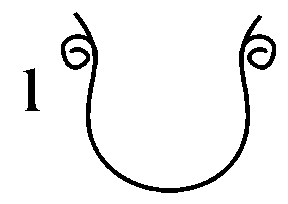
"This is she who nourishes the world, giving of her substance that men might live. Do her honor, o men, for she is your savior in truth; without her, you would not be."
Now the circle moves slightly to the left, and I am looking at the next sigil going clockwise. This one looks like a round-bottomed "W", with a tail going off to the right from the right-hand point of the "W". An image appears behind the sigil. It is a rear view of a nude woman seated on the edge of a pool; the "tail" of the sigil is part of her right leg, the "W" is her seat. She seems to be washing herself carefully, especially her pudenda; and now it seems that she is washing a newborn child.
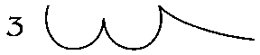
"This is the third of the sigils, not the second. Record it as such." Done.
The wheel turns again, and I see another sigil. This one looks somewhat like a modernistic Lamed. The image forms behind; a woman bare from the waist up. She holds a child in the crook of her right arm, and offers her breast to the child. The horizontal bar of the sigil is her left arm, the slightly curved upper vertical is the child's head; the slanted lower vertical is the left side (her left) of her torso, curving down to her waist.
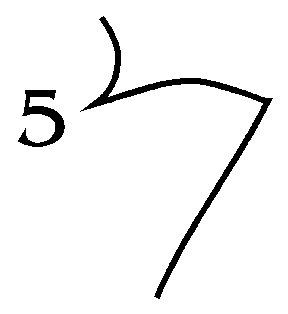
"This is the fifth of the sigils; record it as such." Done.
The wheel turns again, and another sigil comes into view. This one is too complex to describe in words, a set of curves attached at their endpoints. The image behind it shows a left profile of a pregnant woman, near to term, raising a two-year-old child to the Moon. At some moments it seems that she offers a basket of grain and fruits instead. This section contains the ascending lunar node.
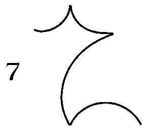
(I sense this is the seventh sigil in clockwise order.)
The next division clockwise is dark; I can see nothing there. In the following division, I see the image of a woman in a field. She is in an odd posture, half-squatting. Her feet are apart and turned outward, her knees bent so that her calves are vertical. Her back is straight. With her right hand she drops seeds into a hole; her left holds pointed staff, point downwards.
The sigil is hard to see. It appears to start at her right shoulder, making a smooth curve to the left and then back to her right foot. Another curve rises up to her left hand, touching her womb at its midpoint, and then down the staff, ending in a small curl. Almost like a backwards "N".
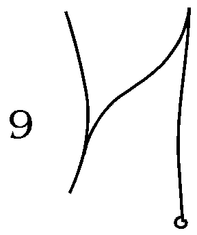
"This is the ninth of his signs. Record it as such." Done.
The energy of the Part seems to be flagging, but I get an indication I should continue.
The circle turns again, and the next sigil I see is a very simple one, like an upside-down "V" with both arms the same height, but the right-hand arm stretched out farther away from the top point than the left arm. An image forms behind it of a woman in right profile, pushing a wheelbarrow or cart laden with foodstuffs. The sigil begins at her right foot, goes up to where her hands grasp the barrow's handles, and down again to the barrow's wheel.
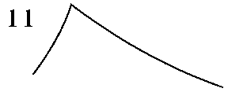
"Now you see the eleventh sigil in order. Do you record it as such." Done.
The wheel turns again, coming to the section just before the descending node. Here the sigil is like an "m", but with three upwards loops, the middle one larger than the two outer ones. An image forms behind it of a woman seated in a chair; her arms are around the shoulders of two children, hugging them close; a girl-child on her right, a boy on her left. She wears a look of contentment.
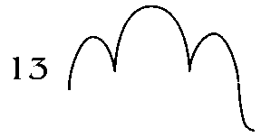
"And the final, thirteenth, sigil is done. Do you look at these as The Seven, o man, and comprehend them thus. And invoke again to acquire the sigils of The Six, another day. And with that shall you know the woman-self of God complete. And we are done for this time."
I thanked the voice of the Part, and ended the vision.
Seer's comments:
As Dee said in another context, "this diversity of reckoning by sixes and sevens I cannot yet well reconcile." And I should add, by twelves and thirteens as well.
Perhaps these seven relate to the Lunar phases shown in Parts 20 through 27. But note that there is no consistent relationship between orbital position and lunar phase; the rapid precession and the Earth's movement mean that Luna can be in any phase at any point in its orbit.
I get a vague impression that these thirteen feminine "signs" alternate negative and positive, as do the signs of the traditional zodiac. If so, then the Six will show a more positive, effortful, or outward-looking aspect than the ones seen today.
My initial impression is that these seven all relate in some way to reproduction and the care of the children. Free-associating:
1 - Pregnancy. The sigil suggests a full womb, with the ovaries on either side. Or a woman's belly at full term, protruding out between the hip bones. The image supports either one of these, with the "cauldron" held directly in front of her womb. If "The Seven" are planets, this would fit well with Luna.
3 - Cleansing the body and newborn of the mess of birth. The shape of the sigil suggests waves on a pond, as well as that shown by the image. Mercury/Hod as Water? Perhaps something to do with Mercury's medical connections.
5 - Feeding the newborn. I don't see how this would fit with Venus/Netzach, which is more closely related to "values" of various sorts, and to personal motivation. Except that the urge to care for a child is a strong form of motivation.
7 - A dedication, perhaps akin to a christening ceremony? Or perhaps a public presentation of the child to show it without defects? The sector's position at the ascending node would tend to support the former. It is odd that the woman is shown as again pregnant; is there some sort of duality or double-cycle involved? Note that the thirteenth image shows two children. Sol/Tiphereth of Luna?
Note that as in the regular zodiac, there is a division in type between the "signs" on either side of the equinoctial axis (or its lunar equivalent, the nodal axis). Those on the lower side are personal in nature, those on the upper side more public and general.
9 - Planting. I thought that this might be Mars, but the eleventh sigil brought with it a strong sense of effort being expended. This one might be Jupiter.
11 - Reaping. Mars.
13 - Completion = Saturn. Survival of the children through the effort of previous sectors.
Saturday, November 25, 1995 1:09 PM
As the vision began, the circle moved out from under my feet to a position in front of me. The names and sigils vanished from its face, and the center became first an image of the "sun" seen in the first vision, then a circle divided into thirteen parts. This circle gained width, and became the ring of the "lunar zodiac" seen yesterday.
A voice says: "Blessings, blessings, blessings, unto she who is our life, and the life of all things; for she has divided herself, that that life might be made to flourish upon the Earth. Give of yourself in the same way, o woman; for upon you is the continuance of things founded and maintained. Let not the ways of men deceive and divert you; for they who rise high do also fall; they who govern are governed in their turn, though they know it not. Their glory fades, and is forgotten in a moment; another takes their place. They have no certainty, save that of eventual loss.
"But that which runs with the heavens, [i.e., that which follows the Moon's cycle] continuing ever, that is not lost. Its constant change is its stability; it continues, with certainty, bringing forth the world. And why should one who has this desire the momentary glories of men?
[In response to my thought about the seeming chauvinism of this:]
"Now, we seek not to put women "in their place"; their nature should be glorified itself, not denigrated. And if one who, having known the Moon, wishes also to know the ways of men, then what of it? She can do both, in her time, as men cannot. Yet she should not become lost in those ways; for they take her away from herself. To become an imitation man, fighting as he fights, ever striving, is no achievement.
"Now take us away from this o Goddess, and let this man look upon the cycle again."
Now the top of the ring [which has remained visible throughout this speech] tilts towards me, and the ring moves over and around me so that I stand again in its center. I realize suddenly that this ring is reversed from the actual state of things. In the physical world, the point I have been calling the "descending node" is actually the ascending node. The voice says: "That which is ascending in the movement of the moon is descending in the movement of the nodes; [that is, in the precessional movement] therefore is this shown aright."
The ring rotates around me so that the first and third sigils are visible. In the empty sector between, a new sigil appears. This one is composed of three downward-pointing spikes, followed by a curve composed of about one-third of a circle. A smaller curve begins the sigil.
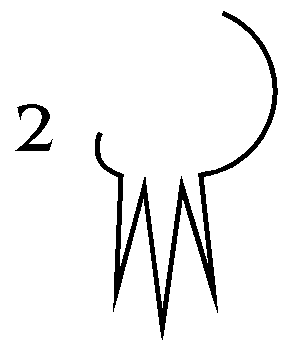
An image appears behind the sigil. It is of a naked pregnant woman seen from the front; she is slightly crouched over, as if just hit with a stomach cramp. Streams of water burst forth from between her legs; these are the three spikes of the sigil. It seems that this is the initial strong contraction of birth, which bursts the amniotic sac and lets forth its fluids.
"This is her Strength" says the voice, "what man can match it, for length and intensity of effort? [I.e., the entire effort of childbirth.] What man could endure it, if he could experience it? Let it be marked as the second of thirteen, and the first of Six." Done.
"And be it known that another strength is hidden therein; look again at the sigil."
Now the image behind the sigil is a side-view of a woman, facing to my left. The initial small curve of the sigil is her mons pubis; the large terminating curve is her gluteus. The three spikes emanate from the folds of her labia; one from her clitoris, one from her urethra, one from her vagina. They are like lightning bolts of a vivid purple hue.
"This is a mystery, o man, one which you are not well fitted to decipher. Though it is not beyond you."
The ring turns so that the third and fifth sigils are now before me. In the blank sector between, another appears. Three curves, each curved towards the center. Too simple to describe without a lot of verbiage. An image forms behind it of a woman lying in bed. She is propped up on large, comfortable pillows, surrounded and covered from the waist down by down comforters. There is a sense of richness about the scene, of material comforts gathered to her use. Her knees are raised beneath the blankets, and her child is propped up against them. She examines the child with a look of joy.
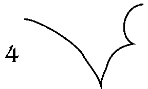
"This is her Glory, to see the fruits of her labor before her, and to know she brought it forth. And in the night does she hold her Treasure to her, and sing praises of the goddess within herself. Mark this as the fourth of thirteen, and the second of the Six." Done.
"Now turn to the last of this side."
The ring turns so that the fifth and seventh sigils are before me, and a new one appears between. Two concentric quarter-circles, curved towards the upper left; a line like a reversed "j" connects them at their right ends.
An image appears behind the sigil, of a woman bending down over a crib, wrapping blankets around a child therein. The child looks up at her with an expression of awe.
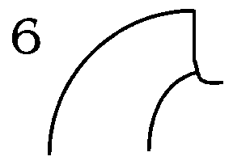
"This is her Responsibility, that her creation needs be supervised and protected, and its needs seen to for many years of Time."
"Mark this as the sixth of thirteen, and the third of the Six." Done.
The ring turns again to show both seventh and ninth sigils. In the space between them, the image of a woman making bread appears. She faces me, and kneads the bread on a table in front of her. Around her are the implements of cooking, and for various home crafts.
I cannot see the sigil clearly, and wait for it, looking closely. Once again, three simple curves; I feel like there ought to be a fourth, but cannot discern where it would appear in the sigil. Now there is a sense that a sun is shining down upon her from the upper right corner of the image, from outside whatever dwelling contains her, and that this is an invisible presence that I mistook for a fourth line in the sigil.
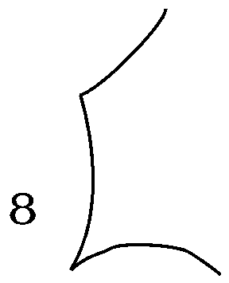
"This is her Wealth, that she have the resources to maintain her creation and make it grow; and she is the Magician who combines that wealth according to her Art." (I note that her posture is remarkably like that of the Magician tarot card. And now it seems that the sigil is the profile of the house in which she works.)
"Mark this as the eighth of thirteen, and the fourth of the Six." Done.
The ring rotates to the next blank sector. Once again I have trouble seeing anything; the power of the Part seems to be fading quickly. I wait, and a sigil slowly appears. Three curves again, this time forming a "W". But where the sigil of the third sector was a round-bottomed "w", this one has points below, and a single half-circle making up the center section.
Now an image appears. It is of a small village green, upon which children play while their mothers watch from seats around the perimeter. The two outer arms of the sigil are like lanes leading in to the green.
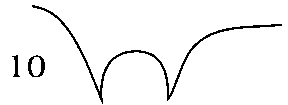
"This is her Joy, that her children are healthy and active, and become more themselves as time passes. And their play is her play, the relief from duty and the chance for relaxation of responsibility, by sharing it with others like her. Mark this as the tenth of thirteen, and the fifth of the Six." Done.
The ring moves once more, to the last of the blank sectors. Here there quickly appears another sigil, a small half-circle above, curve downwards; below, a shallow, long-armed "V". A fourth line goes from the left end of the "V" to the left end of the semicircle.
The image develops as quickly. The woman is lying under a tree. It is night and she looks up at the sky, wherein a full moon shines. Her face reflects the Moon's light, becoming moon-like itself.
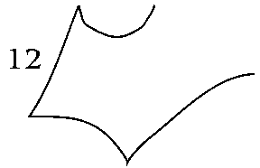
The voice says: "This is her Peace, that she become like her goddess; still and reflective, yet ever changing. The steady rhythm of her change becomes like silence.
"And this is the last of the Six. Mark it as such, and include the sigils in your record.
"Now it is best that you invoke this Part once more, that we might show you some other things about it. For this concentration on the details distracts from those other aspects. Keep as you have been doing in your other exercises, as these have a cumulative effect with what is being done here in Ponodol. Seek us again, on another day, and we will finish.
"For now, we are done."
I thanked the voice, and ended the vision.
Seer's comments:
I admit to having some difficulty dealing with the image of woman presented here; it seems too medieval and chauvinistic. But perhaps I am like those soldiers in the first vision, incapable of appreciating what I am seeing. A peasant woman from Mexico or India might find it perfectly appropriate and valuable.
My impression is that these sectors called "The Six" have planetary attributes like the previous "Seven", save that there is no sector for the Sun in this group. The sectors fit more or less into the sequence presented previously, but with the planets running in almost-reverse order:
2 - Mars. The muscular effort of childbirth is emphasized, and woman's greater resistance to pain. The lightning-bolts are another form of Power, which (as was said) I don't immediately understand. Possibly something to do with the chakras related to the three body-parts, viz. Frater PVN.
4 - Jupiter, due to the "sense of richness" and "treasure" references, and in the priestly sense because she sings praises to her goddess.
6 - Saturn, as authority/responsibility, and as Time.
8 - Mercury, from the obvious Magician references, and because the sigil is her House (BITh, means "house")
10 - Venus, from the references to joy and play. Netzach as the sphere of the Persona, in the refs. to her children "becoming more themselves".
12 - Luna, for obvious reasons.
If this is in fact a symbolization of a "lunar zodiac" then I don't quite see the logic of it. There is a certain sense to the placement of the planetary attributes, which can be seen if the thirteenth sector is placed at the top of the wheel; most of the planets are equidistant from it on either side. It would make even more sense if my tentative attributes for the third and fifth sectors were switched around. This is reasonable in the case of the third sector; the "nymph by the pool" image is a long-standing Venusian symbol. But I cannot see how Mercury would fit with the breast-feeding image of the fifth sector.
Sunday, November 26, 1995 2:29 PM
Invoked Ponodol according to the usual procedure.
I found myself back in the Temple of the first vision of this Part, standing between the two bulls that guard the circle. The center of the circle is back in its "starry" form, and the thirteen-rayed "sun" seen before is still there, as is the sigil. Now upon the rays of the sun I can see the sigils given to me over the last two visions, and in the body of the "sun" I can see a glyph of Luna, a crescent moon overlaying a full moon.
(I put the word "sun" in quotes because I do not believe it is actually intended to represent Sol. Rather, the formation is like a shield or escutcheon.)
The voice of the Part tells me I may now walk forward, and I do so, stopping when I stand upon the shield. After a moment it seems as if I am falling through the shield, while simultaneously being pulled through the glowing panel at the back of the Temple. I get the impression that in some way these two movements are really the same movement seen in different ways.
Now I am in a long hall, moving rapidly along its length. It curves in many directions as I pass. Every ten feet or so, the halls is guarded by another pair of Bulls. The style with which these are made changes gradually. At first they are realistic representations, as one might see in a modern sculpture or a Hindu temple. Moving further, they become stylized in different ways in turn: Assyrian, Minoan, Egyptian, several others I do not immediately recognize. The final few look like three-dimensional versions of the Neolithic cave-paintings; more abstract than even the most modern styles, but expressing the movement and shape of the animal in a few elegantly smoothed curves.
Now the cave ends, and I am in a primeval glade, with a pool in the middle. The full moon reflects perfectly in the pool; there is no wind to disturb the waters. And around the pool are the thirteen figures who passed this way before me in the first vision of the Part.
I can see that these are all women. They gaze down at the pool in rapt attention, each focused on the Moon's reflection. Now they shed their garments and enter the pool from all sides. Their entry does not disturb the waters; the Moon's reflection remains the same. Each puts her cupped hands into the water and lifts them up again through the area of the reflection. They pour the water over their heads. Gathering more water, they pour it over their breasts; yet more, and they pour it over their bellies, so that it drips down their clefts.
They sink down slightly so that the water is up to their waists; they join hands and begin a prayer of some sort, directed at the Moon in the sky.
A wind comes down from the sky, the breath of the Moon. And now the waters of the pool are disturbed. The ripples reflect randomly for a while, but then they come together, distorting the image of the Moon in such a way that it becomes the image of a bull's head.
This image becomes more solid-seeming, and suddenly a Minotaur bursts up through the surface; large, muscular, with dark-brown skin and a mane of crinkly black hair down the back of his head. He wears no clothes. He is very well-hung, uncircumcised, and fully erect. He bellows and roars as if in some intense anguish, or as if full of some power that he cannot contain, which will torment him until he releases it.
He grabs and mounts each woman in turn, taking the first face-forward, human style. The second he takes from behind, the third from in front, alternating around the circle until he has taken all of them. Thus he has taken seven in human fashion, six in the manner of the animal.
With each woman he mounts, he seems to become slightly less solid, and slightly less wild. By the time he takes the last, he is a shadow, and seems exhausted. The women, however, are energized, each in a different way; I can tell by the colors of their auras. The Minotaur falls backwards into the center of the pool, all but his head covered by the water. His eyes roll up in his head and he sinks completely below in a swoon. The waters are still once more, showing the full Moon's reflection.
And now the voice says: "In these most ancient times, every child was a Child of the Moon; a child of the Goddess begotten upon her worldly equivalents. The Bull -- and therefore every man -- was simply a vehicle by which her Power was transferred from the heavens to the Earth, by which her innate Fecundity was made manifest. Men, those vehicles, were constructed by Her so that they could not keep her power for themselves, but must ever release it to the women who serve her.
"It was said (perhaps with some humor) that if men even tried to hold that power, or simply could not release it, it would drive them mad. Men's urge to hunt and fight, to poke animals and each other with their spears, was a sign of this madness; a mad substitution of one spear for another. For when a man had truly released all the Moon's energy unto its rightful recipients, then the man became relaxed, docile, and disinclined to any efforts.
(A side comment from somewhere unknown: "Or as your feminists might say, man is woman's way of making more women.")
I get a flash here, of an ancient religion in which each woman was initiated into adulthood by sexual congress with a priest wearing a bull-mask; a formalization of the myth. This carried on into civilized (in the sense of "citified") times in the rituals of the Goddess in Mesopotamia and elsewhere. And in the agricultural cultures, the power of the Moon contained within the man was sometimes put to purposes of fecundating the fields instead of fecundating women, by slaying him there. But more often a priestess would take the power into herself, and then afterwards distribute it among the fields. Perhaps also it has something to do with the traditional idea that a coven must contain exactly thirteen witches.
(And I am reminded, parenthetically, that many years ago I was told that Set's first form among men was with the head of a bull of some wild species of cattle; I still have the sketch of that head somewhere around here. The lunar quality of the horns in that sketch is even more pronounced than in domesticated cattle.)
"Woman is ever the foundation of culture. It's customs and practices must be centered around her body and its needs. When this is not so, then that culture is subject to the violent rises and falls that are man's way; such cultures inevitably fail. Such cultures might rise high, as now, but they as surely fall again, to a level where again the needs of woman and children again become paramount in everyone's minds."
There is more, but I cannot hear it, only sense it dimly. Something to do with the need for a jump in perspective if current levels of technology and comfort are to be maintained. That is, to a perspective that places its priorities as stated here, but has a breadth of vision to account for how the limits of our environment and resources affect the survival of all women and children.
And now the Moon of the vision fades, falling down below the horizon, and everything becomes dark. I cannot see any more; I end the vision.
Seer's comments:
The basic theme running throughout these visions is that the female principle is the principle of continuation and maintenance, as the male principle (seen in other visions) is that of creation and change. Without the female principle, change would be chaotic; each change wiped out entirely by the next. With the female foundation, change becomes progress, each necessarily building on the changes that came before.
The female contains the male, both in the amatory and the spiritual senses; in her, the power of change is modified by the power of continuation to become Rhythm or cyclic manifestation. Physically, her body follows the Moon. Socially her children recreate, in a new phase, the cycle of birth-life-death that she herself goes through, allowing for the extension of culture over time. Spiritually the transcendental Mother takes the impulses of the many Fathers and transforms them into enduring forms. The universe, manifestation of the divine Mother and Fathers, evidences cyclic behavior in all of its parts.
The tunnel of this vision is a symbol of the enduring presence of the female principle, underlying all societies while remaining essentially unchanged itself. The bull-statues are in many different styles, but they remain bulls nonetheless.
The thirteen women obviously relate
to the thirteen sectors of the "lunar zodiac" in the
previous two visions of the Part. When the Minotaur takes them,
each becomes energized in a different manner. Possibly these thirteen
women/sectors are archetypes of different kinds of women, represent
different personality focuses within the overall theme of womanhood.
I will leave that for those better suited to judge.